Hampshire Telegraph
1768"BATTLE OF MINDEN."
A well-known inn and coaching house at Hilsea which has long since disappeared. It used to boast a signboard painted by Sir Robert Kerporter. About the middle of the 18th Century it gained unenviable notoriety, its proprietor, Samuel James Lewis, being robbed and murdered by a sergeant of the Royal Marines, named Williams, who was tried at Winchester, convicted, and hanged on Southsea Common in 1768. His gibbeted body was taken down and buried secretly by his comrades, the mystery of its disappearance being solved 20 years later, when the remains were found during some excavations on the fortifications.
Comment
This was published Friday 13 February, 1925. The same text appears in Portsmouth in the Past, William G Gates, 1926.
Annals of Portsmouth, William H. Saunders
17681768. Sergeant Williams, Royal Marines, hanged on Southsea Common, for the murder of Samuel James Lewis, landlord of the Battle of Minden public house at Hilsea.
Chronicles of Portsmouth, Henry and Julian Slight, 1828
Thursday 28 July, 1768—July 28, 1768. Sergeant Williams hung on Southsea Common for the murder of Samuel Lewis, landlord of the Battle of Minden at Hilsea.
Oxford Journal
Saturday 12 December, 1772WEDNESDAY, Dec. 9.
Extract of a letter from Portsmouth, Dec. 6.
"On Wednesday night last as Mrs. Lewis, who keeps a Public-house, the sign of the Battle of Minden, at Hilsea near Portsmouth, was going to-bed, she discovered the feet of a man under the bed. Her maid and children lay in the same room; one of the children cried for beer, which proved a very lucky circumstance for her; alarmed as she was, she had nevertheless the presence of mind to pretend not to take any notice of what she saw, but fondly desired the child to lie still and she would draw her some beer. She immediately went down stairs, slipt out of doors, went over to a farm-house opposite, and after alarming them acquainted them with the circumstance. The Farmer and three of his men arming themselves went over with her, and found a man under the bed with a razor open in his hand; they instantly secured him, and the next morning carried him before a Justice of Peace, who committed him to Winchester gaol. Thus providentially did this woman and three innocent children escape from being all murdered. What is remarkable is, that this woman's husband was shot about five years ago two miles from Portsmouth, as he was going home, by one Williams, who was executed for the murder, and is hanging in chains on South Sea common."
Hampshire Chronicle
Monday 28 June, 1790HAMPSHIRE.
TO be SOLD by AUCTION, on Thursday the 5th of August, 1790, at five o'clock in the afternoon, at the sign of the Battle of Minden, at Hilsea, in the County of Southampton.
All that valuable FREEHOLD ESTATE, called Great Horsey, being an Island situate at the upper end of Portsmouth Harbour, near Hilsea aforesaid, in the Parish of Wimering, in the said County of Southampton, [comprising?] about 106 acres of as rich pasture land, as any in the Kingdom, with a convenient farmhouse, barn, stable and necessary out-buildings, now in the occupation of Farmer George Guy, at the yearly rent of 100l. clear of all deductions, who has had a year's notice to quit the said farm, expiring at Michaelmas Day next.
There is a safe carriage way from Hilsea to the Island twice every day at low tide. The estate is now in perfect repair, and although in a state of good cultivation, yet capable of great improvement: and being within four miles of Portsmouth is very conveniently situate for vending its productions to great advantage.
For further particulars, enquire of Mr. GEORGE BINSTEED, Attorney at Law in Portsmouth.
Hampshire Telegraph
Monday 04 May, 1812GREAT HORSEA SALT MARSH, will open for the reception of Hunters on the 13th day of May next, at Two Guineas the half-quarter, and one shilling per day after that period; to be paid when the Horses are taken away—Gentlemen to be allowed to change their Horses.
N.B. As it is intended to take in a limited number, whoever wishes to secure places are requested to bespeak them of Mr. Pratt, at the Battle of Minden, Hilsea, near Portsmouth, Hants.
An Act to vest in Trustees certain Messuages, Lands, Tenements and Hereditaments, for extending the present Lines and Works, and for erecting other Works and Buildings at and near Portsmouth and Hilsea, in the County of Southampton
Monday 20 December, 1813The FIRST SCHEDULE to which this Act refers, marked A. comprizing the Lands, &c. at or near Hilsea.
ALL that Piece or Parcel of Pasture Land, containing by Statute Measure Twelve Acres Two Roods and Twenty five Perches or thereabouts, belonging to Richard Pittis, situate, lying and being in the Parish of Wymering in the County of Southampton, on the North Side of the Lake or Channel, belonging to His Majesty, running from Portsmouth Harbour to Langston Harbour, and on the West Side of the Turnpike Road leading from Portsmouth to London;
and also all that other Piece or Parcel of Pasture Land, containing by Statute Measure Fourteen Acres and Twelve Perches or thereabouts, also belonging to the said Richard Pittis, adjoining the said Piece or Parcel of Land hereinbefore described, and bounded on the North by other Land of the said Richard Pittis, on the South partly by the before mentioned Lake or Channel, and partly by Land belonging to His Majesty, on the East by a Strip of Waste Land, belonging to Thomas Thistlethwayte Esquire, as Lord of the Manor of Wallesworth, adjoining the said Turnpike Road, and on the West partly by other Land of the said Richard Pittis, and partly by the said Harbour of Portsmouth;
and also all that the said Strip of Waste Land, containing by Statute Measure One Rood and Twenty Perches, and also the Messuage erected thereon, with its Appurtenances, belonging to the said Thomas Thistlethwayte, and now in the Occupation of Arthur Mills, near the South End of which said Strip of Land, the Weighing Engine of the Turnpike now stands, bounded on the North by other Part of the said Waste Land, and a Cottage standing thereon, in the Occupation of Thomas Holland, on the South by Land belonging to His Majesty, on the East by the said Turnpike Road, and on the West by the said Piece or Parcel of Land lastly hereinbefore described;
and also all that Messuage or Tenement, with the Outhouses, Garden, Piece or Parcel of Land, and other Appurtenances, containing by Statute Measure One Rood and Thirty two Perches or thereabouts, belonging to Andrew Lindegren Esquire, and now in the Occupation of Charles Browning, situate, lying and being in the said Parish of Wymering, on the East Side of the said Turnpike Road, together with the small Piece of Waste Land, containing One Rood and Fourteen Perches or thereabouts, on the East Side thereof, Part whereof forms the Way to Land of William Padwick, herein after described, and bounded on the North by a Road leading from the said Turnpike Road to certain Salterns, belonging to James Stead, hereinafter described, on the South by Land belonging to William Garrett Esquire, next hereinafter described, on the East by the said Turnpike Road, and on the West partly by the East End of the Road leading to the said Salterns, and partly by Land belonging to the said William Padwick;
and also all that Messuage or Tenement, with the Outhouses thereunto belonging, now used as a Public House, called The Horse and Jockey;
and also all that Piece or Parcel of Pasture Land adjoining thereto, belonging to the said William Garrett, situate and being on the East Side of the said Turnpike Road, in the Parish of Wymering, containing together by Statute Meaſure One Acre Three Roods and Twenty three Perches, be the same more or less, and bounded on the North by the said Piece or Parcel of Land and Premises, lastly hereinbefore described, on the South by Land belonging to His Majesty, on the East by Land belonging to the said William Padwick, and on the West by the said Turnpike Road;
and also all that Piece or Parcel of Arable Land belonging to the said William Padwick, containing by Statute Measure Nine Acres One Rood and Four Perches or thereabouts, situate, lying and being in the said Parish of Wymering, and bounded on the North by the Road leading to the said Salterns belonging to the said James Stead, on the South by Land belonging to His said Majesty, on the West partly by the Land and Premises lastly herein before described, and partly by the said small Piece of Waste Land, containing One Rood and Fourteen Perches, and on the East partly by other Land of the said William Padwick, and partly by the said Salterns and Pond of the said James Stead;
and also all that Piece or Parcel of Land, containing by Statute Measure One Acre and Thirty five Perches or thereabouts, Part of a Meadow belonging to the said William Padwick, situate and being in the said Parish of Wymering, being of a triangular Form, and bounded on the North by other Part of the said Meadow, from which the same is intended to be parted off and divided, on the South and East by Land belonging to the said James Stead, and on the West by the Road leading to the said Salterns of the said James Stead;
and also all that Piece or Parcel of Land, partly Arable, and partly used as a Saltern, together with the Boiling House or Tenements thereon erected, containing together by Statute Measure Ten Acres Two Roods and Three Perches or thereabouts, belonging to the said James Stead, and now in his Occupation, situate, lying, and being in the said Parish of Wymering, and bounded as follows; that is to say, on the North by Land of the said William Padwick, on the South by other Land of the said William Padwick, next hereinafter described, on the East by Land belonging to William Friend, and on the West by the said Two Pieces or Parcels of Land lastly hereinbefore described;
and also all that Piece or Parcel of Pasture Land, containing by Statute Measure Ten Acres Two Roods and Eighteen Perches or thereabouts, belonging to the said William Padwick, situate, lying and being in the said Parish of Wymering, and bounded on the North by the said Salterns laſtly hereinbefore described, on the South by the said Lake or Channel belonging to His Majesty, on the East partly by the said Lake or Channel, and partly by other Part of the said Salterns lastly hereinbefore described, and on the West partly by Land belonging to His said Majesty, and partly by the said Piece or Parcel of Land belonging to the said William Padwick, containing Nine Acres One Rood and Four Perches hereinbefore described;
and also all those Two Fields or Closes of Pasture or Marsh Land, together with the Tenements, Cottages, Outhouses or Stables erected thereon, containing together by Statute Measure Fifteen Acres One Rood and Fifteen Perches or thereabouts, belonging to the said William Friend, situate and being in the said Parish of Wymering, and bounded on the North partly by other Land of the said William Padwick, and partly by a Road leading into the said Two Fields or Closes of Land, on the South by the said Lake or Channel of His said Majesty, on the East by Lands of the said Thomas Thistlethwayte called Nore Marsh, and on the West partly by the said Salterns hereinbefore described, and partly by the said Lake or Channel of His Majesty;
and also all those Four Pieces or Parcels of Land, containing together by Statute Measure Twenty nine Acres Two Roods and Twenty nine Perches or, thereabouts, being Part of the said Marsh, called Nore Marsh, belonging to the said Thomas Thistlethwayte, situate, lying and being in the Parish of Wymering aforesaid, and abutted and bounded on the North by other Part of the said Marsh, on the South by the said Lake or Channel of His said Majesty, on the East by Land of James Knight, and on the West partly by Land of the said William Friend, and partly by the said Lake or Channel;
and also all that Piece or Parcel of Land, containing by Statute Measure Seventeen Acres Three Roods and Eight Perches or thereabouts, being Part and Parcel of certain Marsh or Pasture Land belonging to the said James Knight, situate and being in the said Parish of Wymering, and abutted and bounded on the North by other Lands of the said James Knight, on the South by the said Lake or Channel of His said Majesty, on the East partly by the said Lake or Channel, and partly by other Lands of the said James Knight, and on the West partly by the said Lake or Channel, and partly by one of the said Four Pieces or Parcels of Land lastly hereinbefore described;
and also all that other Piece or Parcel of Land containing by Statute Measure Two Acres Three Roods and Twenty five Perches or thereabouts, belonging to the said James Knight, adjoining the North Part of the Piece or Parcel of Land lastly hereinbefore described, and bounded on the North, Eaſt and South by other Land of the said James Knight, and on the West by Nore Marsh aforeſaid;
and also all those Four several Pieces or Parcels of Pasture Land, containing by Statute Measure Fifty four Acres Three Roods and Two Perches or thereabouts, late belonging to Sir John Carter Knight, deceased, but now to Dame Carter and Arthur Atherley Esquire, his Devisees in Trust, situate, lying and being at or near Hilſea, in the said Parish of Wymering, on the South Side of Post Bridge, and on the West Side of the London Turnpike Road, and bounded on the North by Land belonging to His said Majesty, on the South by Land belonging to John Burrell, on the East partly by other Lands of the said Devisees in Trust, partly by Land of William Goldfinch, partly by Land of John Hellyer Esquire, and partly by Land of Ann Burrell Widow, and on the West by the Harbour of Portsmouth;
and also all those Eleven several Closes or Pieces or Parcels of Land, containing together by Statute Measure Sixty seven Acres and Thirteen Perches or thereabouts, belonging to the said John Burrell, situate, lying and being on the South Side of the Pieces or Parcels of Land lastly hereinbefore described, and adjoining each other, situate, lying and being in the said Pariſh of Wymering, and in the Parish of Portsea, in the said County of Southampton, bounded on the North partly by the said Pieces or Parcels of Land lastly hereinbefore described, and partly by Land of the said Ann Burrell Widow, on the South, partly by land of the College of Westminster, and partly by Two Meadows of John Morey on the East, partly by Three Meadows or Pieces of Pasture Land now or late belonging to Admiral Sir Roger Curtis Baronet, to the Devisees in Trust of the said Sir John Carter, and to Richard Antram and Joseph Crasler, partly by other Land of the said John Burrell, partly by Land of Thomas Hopkins, partly by other Land of the said Richard Antram and Joseph Crasler, and partly by other Land of the said Ann Burrell, and partly by Land of John Morey, and on the West by the said Harbour of Portsmouth;
and also all that Piece or Parcel of Arable Land, containing by Statute Measure One Acre One Rood and Nineteen Perches or thereabouts, also belonging to the said John Burrell, situate, lying and being near the said Pieces or Parcels of Land lastly hereinbefore described, and bounded on the North by the said Land of Thomas Hopkins, on the South by the said Land of the said Ann Hopkins, on the East partly by other Land of the said Ann Burrell, and partly by Land of John Hubbard, and on the West by Land of the said Richard Antram and Joseph Crasler;
and also all that Piece or Parcel of Pasture Land, containing by Statute Measure Five Acres and Twelve Perches or thereabouts, also belonging to the said John Burrell, situate, lying and being near the Lands lastly hereinbefore described, and also the Cottage erected at the East End thereof, and bounded on the North by Land of the said Richard Antram and Joseph Crasler, on the South by the said Land of the said Thomas Hopkins, on the East partly by the said last mentioned Land, and partly by the said Turnpike Road to London, and on the West by Land of the said John Burrell, Part of the Lands hereinbefore described;
and also all that Piece or Parcel of Pasture Land containing by Statute Measure One Acre Two Roods and Twelve Perches or thereabouts, now or late belonging to the said Richard Antram and Joseph Crasler, situate and being on the North Side of and adjoining to the said Piece or Parcel of Land lastly hereinbefore described;
and also all that Piece or Parcel of Pasture Land, containing by Statute Measure One Acre Two Roods and Twenty two Perches or thereabouts, now or late belonging to the said Devisees in Trust of the said Sir John Carter, deceased, situate, lying and being on the North Side of, and adjoining to the said Piece or Parcel of Land lastly hereinbefore described;
and also all that Piece or Parcel of Pasture Land containing by Statute Measure Two Acres Three Roods and Six Perches or thereabouts, now or late belonging to Admiral Sir Roger Curtis Baronet, situate, lying and being on the North Side of and adjoining to the said Piece or Parcel of Land lastly hereinbefore described, which said Three last mentioned Pieces or Parcels of Pasture Land are bounded on the North by Land belonging to the said Ann Burrell, on the South and West by Land of the said John Burrell, and on the East by the Turnpike Road aforesaid;
and also all that Piece or Parcel of Arable Land containing by Statute Measure Four Acres One Rood and Eleven Perches or thereabouts, belonging to the said Ann Burrell, situate, lying and being in the said Parish of Wymering;
and also all that other Piece or Parcel of Arable Land containing by Statute Measure Three Acres Two Roods and One Perch or thereabouts, also belonging to the said Ann Burrell, situate, lying and being in the said Parish of Portsea, adjoining the said Piece or Parcel of Land lastly hereinbefore described at the East End thereof, and bounded on the North partly by Land of the said Richard Antram and Joseph Crasler, partly by Land of the said John Burrell hereinbefore described, and partly by Land of John Hubbard, James Soaper and George Dawson, on the latter of which stands a Public House called The King's Head, on the South partly by Land of the said John Burrell hereinbefore described, and partly by the said Land of the said John Morey, on the East by the said Turnpike Road, and on the West partly by the last mentioned Land of the said John Morey, and partly by Land of the said John Burrell hereinbefore described;
and also all that Piece or Parcel of Arable Land, containing by Statute Measure Two Acres Two Roods and Thirteen Perches or thereabouts, belonging to the said Ann Burrell, situate, lying and being near the said Piece or Parcel of Land lastly hereinbefore described, and abutted and bounded on the North by the said Land of the said Thomas Hopkins, on the South by the said Land of the said John Hubbard, on the East by the Turnpike Road aforesaid, and on the West by Land of the said John Burrell, hereinbefore described;
and also all that Farm House, with the Stables, Cart Houses, Barns, Granary and other Outhouses, Farm Yard, Garden and Orchard thereunto belonging;
and also all that Piece or Parcel of Arable Land thereunto adjoining, containing together by Statute Measure Ten Acres and Thirty three Perches or thereabouts, also belonging to the said Ann Burrell, situate and being on the West Side of the said Turnpike Road, and bounded on the North by Land of the said Devisees in Trust of the said Sir John Carter, on the South by Land now or late of the said Sir Roger Curtis, on the East by the Turnpike Road aforesaid, and on the West by Land of the said Devisees in Trust hereinbefore described;
and also all that Piece or Parcel of Land lately Arable, containing by Statute Measure Four Acres One Rood and Thirty six Perches or thereabouts, belonging to the said John Morey, now used and occupied as Garden Ground, situate and being in the said Parish of Portsea, and bounded on the North by Land of the said Ann Burrell hereinbefore described, on the South partly by Land of the said John Burrell, adjoining a Public House there, called, The Green Post, and partly by a Meadow of the said John Morey, on the East partly by other Land of the said Ann Burrell herein before described, and partly by the Turnpike Road aforesaid, and on the West partly by other Land of the said Ann Burrell also hereinbefore described, and partly by other Land of the said John Burrell also hereinbefore described;
and also all that Piece or Parcel of Arable Land, containing by Statute Measure Five Acres and Twenty five Perches or thereabouts, belonging to the said Richard Antram and Joseph Crasler, situate, lying and being in the said Parish of Wymering, and bounded on the North by the Land next hereinafter described, on the South by Land of the said Ann Burrell hereinbefore described, and on the East and West by Land of the said John Burrell also hereinbefore described;
and also all that Piece or Parcel of Land used as a Road from the Turnpike Road aforesaid to the said Piece or Parcel of Land lastly hereinbefore described;
and also all that newly erected Messuage, Tenement or Dwelling House, Yard and Garden thereunto belonging, now used as a Public House, called The King's Head belonging to George Dawson;
and also all that old Cottage adjoining the same, with the Appurtenances, also belonging to George Dawson, situate and being in the Parish of Wymering aforesaid, adjoining the said London Turnpike Road, and bounded on the North by the said Road leading to the said Piece or Parcel of Arable Land belonging to the said Richard Antram and Joseph Crasler, and by the Stables and Land of the said John Hubbard, on the South by Land of the said Ann Burrell, on the East by the London Turnpike Road aforesaid, and on the West by Land of James Soaper;
and also all that Cottage and Land of the said James Soaper, situate and being at the Back of the said Premises lastly hereinbefore described, bounded on the North by the said Road leading into the said Piece or Parcel of Arable Land of the said Richard Antram and Joseph Crasler, and the Premises of the said John Hubbard, on the South and West by the said Land of the said Ann Burrell, and on the East by the Land and Premises lastly hereinbefore described;
and also all that Messuage, Tenement or Dwelling House, with the Stables, Outhouses, Yard, Garden and Land, containing by Statute Measure One Acre and Thirty six Perches or thereabouts, belonging to the said John Hubbard, in the Occupation of Mackenzie Esquire, Barrack Master at Hilsea Barracks, situate and being in the Parish of Wymering aforesaid, bounded on the North by Land of the said Ann Burrell, on the South by the said Road leading into the Piece of Arable Land of the said Richard Antram and Joseph Crawler, on the East by the London Turnpike Road aforesaid, and on the West by other Land of the said John Burrell hereinbefore described;
and also all those Four Messuages, Tenements or Dwelling Houſes, with the Carpenter’s Shop, Saw House, Yards and Appurtenances belonging to Thomas Hopkins, now or late in the Occupation of James Carter and Edward Catchlove;
and also all that Piece or Parcel of Land containing by Statute Measure Three Roods and Seven Perches or thereabouts, also belonging to the said Thomas Hopkins, situate and being on the West Side or Back of the said first mentioned Messuage and Premises, in the said Parish of Wymering, bounded on the North by other Land and a Cottage of the said John Burrell, on the South by Land belonging partly to the said Ann Burrell, partly to the said John Burrell, and partly to the said Richard Antram and Joseph Crasler, on the East by the Turnpike Road aforesaid, and on the West by other Land of the said John Burrell;
and also all that Piece or Parcel of Land, and the Two Messuages, Tenements or Dwelling Houses, Barns, Stables and Cart Houses standing on the East End thereof, containing together by Statute Measure Three Acres One Rood and Thirty nine Perches or thereabouts;
and also all that other Piece or Parcel of Land, and the Cottages and Cart Houses standing on or near the East End thereof, containing together by Statute Measure Three Acres and Two Roods or thereabouts;
and also all that Messuage, Tenement or Dwelling House, with the Stable and other Appurtenances now used as a Public House, called The Coach and Horses;
and also all that Piece or Parcel of Land adjoining the same, now used as a Garden thereto, which said several Pieces or Parcels of Land, Messuages or Tenements, Cottages, Buildings and Premises lastly hereinbefore, described, belonging to the said Devisees in Trust of the said Sir John Carter deceased, are situate in the Parish of Wymering aforesaid, and are bounded on the North partly by a Road leading from the Turnpike Road aforesaid into other Lands of the said Deviſees in Trust, and partly by Land of John Hellyer Esquire, hereinafter described, on the South by Land of the said Ann Burrell, on the East by the Turnpike Road aforesaid, and on the West partly by Land of the said John Hellyer, and partly by Land of the said Ann Burrell;
and also all that other Piece or Parcel of Land, containing by Statute Measure Two Acres and Thirty three Perches or thereabouts belonging to the said Devisees in Trust of the said Sir John Carter deceased, situate in the said Parish of Wymering, and bounded on the North by the said Road leading from the Turnpike Road aforesaid, on the South by Land of the said Ann Burrell, on the East by Land of the said John Hellyer next hereinafter described; and on the West by the said Road leading to the said other Lands of the said Devisees in Trust;
and also all that Piece or Parcel of Land, containing by Statute Measure Two Acres Three Roods and Eighteen Perches or thereabouts; and also the Cottage and its Appurtenances, erected and standing on or near the East End thereof, belonging to the said John Hellyer, situate, lying and being in the said Parish of Wymering, and bounded on the North by the said Road leading out of the said Turnpike Road to the Lands of the Devisees in Trust of the said Sir John Carter deceased, and on the South, East and West by the Lands of the said Devisees in Trust lastly hereinbefore described;
and also all that Piece or Parcel of Land, containing by Statute Measure Seven Acres and Thirty four Perches or thereabouts, with the newly erected Cottage at the East End thereof, belonging to William Goldfinch Esquire, situate, lying and being in the said Parish of Wymering, and bounded on the North by the Land belonging to the Devisees in Trust of the said Sir John Carter deceased, next hereinafter described, on the South by the said Road leading to other Lands of the said Devisees in Trust, on the East by a small Piece of certain Waste Lands called Hilsea Green, lately allotted under an Aćt of Parliament passed for that Purpose, to William Padwick the Younger, and sold by him to the said William Goldfinch, and on the West by other Lands of the said Devisees in Trust;
and also the said last mentioned small Piece of Waste Land, lying between the said Land of the said William Goldfinch, hereinbefore described, and the Turnpike Road aforesaid, containing by Statute Measure Thirty eight Perches or thereabouts, on Part of which the Public Pound lately stood;
and also all that Piece or Parcel of Land, containing by Statute Measure Eight Acres and Twenty two Perches or thereabouts, lately Part of the said Waste Lands of the Parish of Wymering, called Hilsea Green, allotted under the said Act of Parliament to the said Devisees in Trust of the said Sir John Carter deceased, situate and being on the West Side of the said Turnpike Road, and bounded on the North partly by Land of His Majesty, and partly by Land of Thomas Thistlethwayte Esquire, next hereinafter described, allotted to him as Lord of the Manor of Wallesworth, on the South by the said Land of the said William Goldfinch, and the said small Piece of Waste Land lastly hereinbefore described, on the East partly by the said Land of the said Thomas Thistlethwayte, and partly by the Turnpike Road aforesaid, and on the West by other Land of the said Deviſees in Trust of the said Sir John Carter deceased;
and also all that the said Piece or Parcel of Land belonging to the said Thomas Thistlethwayte, containing by Statute Measure One Acre One Rood and Ten Perches, be the same more or less, adjoining the said Piece or Parcel of Land, lastly hereinbefore described, and bounded on the North by Land of His Majesty, on the East by the Turnpike Road aforesaid, and on the South and West by the said Land lastly hereinbefore described;
and also all that other Piece or Parcel of Land, containing by Statute Measure Five Acres Three Roods and Two Perches belonging to the said Thomas Thistlethwayte, being other Part of the said Waste Land called Hilsea Green, allotted to him as Lord of the said Manor of Wallesworth, situate on the East Side of the said Turnpike Road, and bounded on the North by Land of His Majesty, on the South and East by Lands of the said John Hellyer, next hereinafter described, and on the West by the said Turnpike Road;
and also all that Piece or Parcel of Arable Land containing by Statute Measure Seven Acres and Twenty four Perches, or thereabouts; and also all those Two other Pieces or Parcels of Land, one containing by Statute Measure One Acre and Twenty seven Perches or thereabouts, situate on the West Part of the said Piece of Arable Land, being Part of the said Waste Lands called Hilsea Green, and the other on the East Part of the said Piece of Arable Land, containing by Statute Measure Five Acres Three Roods or thereabouts, being other Part of the said Waste Lands called The Great Common, which said Three last mentioned Pieces or Parcels of Land belong to the said John Hellyer, and bounded on the North partly by the Land lastly hereinbefore described, and partly by Land of His Majesty, on the South by Land of the said William Padwick the Younger, on the East by other Land of His said Majesty, and on the West by the said Turnpike Road;
and also all that Messuage or Tenement, or Farm House, Barns, Stable, Yard, Garden, Orchard and other Appurtenances thereunto, belonging to the said William Padwick the Younger, situate and being in the said Parish of Wymering, containing together by Statute Measure One Acre Two Roods and Twenty six Perches, be the same more or less, and bounded on the North by Land of the said Deviſees in Trust of the said Sir John Carter deceased, on the South partly by other Land of the said Deviſees in Trust, and partly by other Land of the said William Padwick the Younger next hereinafter described, on the East by the last mentioned Land of the said William Padwick the Younger, and on the West by other Land of the said William Padwick the Younger, late Part of Hilsea Green;
and also all that Piece or Parcel of Arable Land, containing by Statute Measure Nineteen Acres Two Roods and Thirty eight Perches or thereabouts, belonging to the said William Padwick the Younger, situate, lying and being in the said Parish of Wymering, being Part of a Field called Ham Field, and bounded on the North by the said Land of the said John Hellyer hereinafter described, on the South by a Road leading from Hilea Green, on the East by other Lands of the said William Padwick the Younger hereinafter described, and on the West partly by other Lands of the said William Padwick the Younger, being Part of the Waste Lands called Hilsea Green, and partly by Lands of the said Deviſees in Trust of the said Sir John Carter deceased, partly by an Orchard of the said William Padwick the Younger, and partly by Lands of Charles Walker and of the said Ann Burrell;
and also all that other Piece or Parcel of Land called North Field;
and also all that Piece or Parcel of Arable land at the East End thereof, containing together by Statute Measure Twenty nine Acres Three Roods and Thirty five Perches or thereabouts, belonging to the said William Padwick the Younger, situate in the said Pariſh of Wymering, and bounded on the North partly by Ham Field and partly by other Land allotted to the said William Padwick the Younger, being other Part of the said Waste Lands called The Great Common, on the East by Land of the said Devisees in Trust of the said Sir John Carter deceased, and on the West partly by Ham Field aforesaid and partly by a small Parcel of Waste Land next hereinafter described, lying between Ham Field and North Field;
and also all that the said last mentioned small Piece or Parcel of Waste Land;
and also all that other Piece or Parcel of Land, containing by Statute Measure One Acre Two Roods and One Perch or thereabouts, other Part of the said Waste Land called Hilsea Green, allotted to the said William Padwick the Younger under the said Act of Parliament, and bounded on the North by Land of the said John Hellyer hereinbefore described, on the South by Land of the said Devisees in Trust of the said Sir John Carter deceased, on the East by Part of Ham Field, and on the West by the said Turnpike Road;
and also all that other Piece or Parcel of Land, containing by Statute Measure Two Acres Two Roods and Twenty five Perches, or thereabouts, being other Part of the said Waste Land of the said Parish of Wymering called Hilsea Green, so allotted to the said William Padwick the Younger, and bounded on the North by the Land of the said Deviſees in Trust of Sir John Carter deceased, lastly hereinbefore described, on the South by a Road laid out by the Commissioners of Inclosure under and by virtue of the said Act, on the East partly by the said Farm House and other Lands of the said William Padwick the Younger hereinbefore described, partly by Lands of the said Devisees in Trust of the said Charles Walker and of the said Ann Burrell, and on the West by the said Turnpike Road;
and also all that other Piece or Parcel of Land containing by Statute Measure Twenty seven Acres and Fourteen Perches or thereabouts, being other Part of the Waste Lands of the said Parish of Wymering, called The Great Common, so allotted to the said William Padwick the Younger as aforesaid, and bounded on the North partly by Land allotted to the said John Hellyer, and partly by Land of His Majesty, on the South by North Field hereinbefore described, on the East by other Part of the said Great Common allotted to the said Devisees in Trust of the said Sir John Carter deceased, and on the West by Ham Field;
and also all that other small Piece or Parcel of Land containing by Statute Measure Three Roods and Thirty six Perches or thereabouts, other Part of the Waste Lands called The Great Common, allotted to the said William Padwick the Younger, and bounded on the North by other Part of the said Common allotted to the said John Burrell, on the East by other Part of the said Common allotted to the said Ann Burrell Widow, and on the West by other Part of the said Common allotted to the said Devisees in Trust of the said Sir John Carter deceased;
and also all that other Piece or Parcel of Land containing by Statute Measure Seventeen Acres Two Roods and Eight Perches or thereabouts, other Part of the said Waste Lands called The Great Common, allotted to the said William Padwick the Younger, and bounded on the North and West by other Parts of the said Common allotted to Richard Antram and Joseph Crasler, on the South by Lands of the said Devisees in Trust of the said Sir John Carter deceased, and on the East by Langston Harbour, all which said Lands of the said William Padwick the Younger are let on Lease to the said William Hopkins for a Term of which about Sixteen Years are now unexpired;
and also all that Messuage, Tenement or Cottage, and Barn, with their Appurtenances, and also all that Piece or Parcel of Land on Part of which the same stand, containing by Statute Measure Two Acres and Thirty nine Perches or thereabouts, belonging to the said Devisees in Trust of the said Sir John Carter deceased, situate and being in the said Parish of Wymering;
and also all that other small Piece or Parcel of Land, containing by Statute Measure Three Acres Two Roods and Twenty six Perches or thereabouts, also belonging to the said Devisees in Trust adjoining on the North Part of the said last mentioned Piece or Parcel of Land, and bounded together on the North and East by Ham Field, on the South partly by the same Field and partly by the Barns and Farm Yard of the said William Padwick the Younger, in the Occupation of William Hopkins, and on the West by other Land, Part of Hilſea Green, allotted to the said Devisees in Trust under the said Act;
and also all that small Piece or Parcel of Land, containing by Statute Measure Two Roods or thereabouts, belonging to the said Devisees in Trust, situate and being on the South Part of the said Barn and Farm Yard of the said William Padwick the Younger, and bounded on the North East and West by the said Barn and Farm Yard and Land of the said William Padwick the Younger, and on the South by Tenements and Land of Charles Walker;
and also all that other small Piece or Parcel of Land belonging to the said Devisees in Trust, situate and being opposite the East Side of Hilsea Barracks in the said Parish of Wymering, and bounded on the North by a Messuage and Land of the said William Hopkins, on the South by a Messuage and Land late of Thomas Sandon, but now of John Green, on the East by Land of the said Richard Antram and Joseph Crasler, Part of Inn Field, and on the West by the Public Road leading to Hilsea Green;
and also all that Piece or Parcel of Arable Land, situate, lying and being in the said Parish of Wymering, in a Field called Inn Field, and also all that other Piece or Parcel of Arable Land adjoining the East Side of the said last mentioned Land, containing together by Statute Measure Twenty Acres Two Roods and Thirty Perches or thereabouts;
and also all that other Piece or Parcel of Arable Land, containing by Statute Measure Four Acres Three Roods and Twenty five Perches or thereabouts, being the remaining Part of an Inclosure now intersected by a Road laid out under and by virtue of the said Act of Parliament for dividing and allotting the Common Fields and Waste Lands of the Parishes of Wymering and Widley, and Part of a Field called Carston Field all which Three several last mentioned Pieces or Parcels of Land belong to the said Devisees in Trust of the said Sir John Carter deceased, and are bounded on the North by another Road laid out under and by virtue of the said Act of Parliament, on the South partly by a Field called Seedlip, belonging to the said Richard Antram and Joseph Crasler, and partly by other Land of the said Devisees in Trust hereinafter described, Part of the Waste allotted to them under the said Act, on the East partly by a Field called Carston Field, belonging to the said Ann Burrell, and partly by a Piece of Land hereinafter described, belonging to the Vicar of Wymering, and on the West by the said Field called Inn Field;
and also all that other small Piece or Parcel of Land, containing by Statute Measure One Acre and Twelve Perches or thereabouts, belonging to the said Devisees in Trust, situate, lying and being in the said Parish of Wymering, and bounded on the North by other Lands of the said Devisees in Trust, Part of the said Waste Land called The Great Common, allotted to them the said Devisees under the said Act, on the South by the said Road laid out by the said Commissioners under the said Act, running from Hilſea Green Eastward, on the East by Land of the said John Burrell, and on the West by Land of the said William Padwick the Younger;
and also all that Piece or Parcel of Land, containing by Statute Measure Two Acres One Rood and One Perch or thereabouts, Part of Hilsea Green, allotted to the said Devisees in Trust of the said Sir John Carter deceased, and bounded on the North and South by other Parts of Hilsea Green, allotted to the said William Padwick the Younger, on the East by other Lands of the said Deviſees hereinbefore described, and on the West by the said London Turnpike Road;
and also all that other Piece or Parcel of Land, containing by Statute Measure Twelve Acres Three Roods and Thirty Perches or thereabouts, Part of the said Waste Lands called The Great Common, allotted to the said Devisees in Trust, and bounded on the North by Land of His said Majesty, on the South by other Land of the said Devisees in Trust hereinbefore described, on the East partly by other Part of the said Waste Land allotted to the said John Burrell, and partly by the Arable Land of the said William Padwick the Younger, and on the West by other Land of the said William Padwick the Younger;
and also all that other Piece or Parcel of Land, containing by Statute Measure Five Acres Three Roods and Six Perches or thereabouts, Part of the Waste Land of the Parish of Wymering, allotted to the said Devisees in Trust, and bounded on the North by the Arable Lands of the said Devisees in Trust in Inn Field and Carston Field hereinbefore described, on the South by Lands of the said Richard Antram and Joseph Crasler, and of the said Ann Burrell Widow, on the East by Lands of the said Ann Burrell, and running to a Point on the West Part thereof;
and also all those Two Messuages, Tenements or Cottages; and Gardens, with their Appurtenances, belonging to Charles Walker and Charles Walker the Younger, situate, lying and being in the Parish of Wymering aforesaid, bounded on the North by Land of the said Devisees in Trust of the said Sir John Carter deceased, on the South by Six Tenements or Cottages, and Land of the said Ann Burrell, on the East by Ham Field aforesaid, and on the West by the said Road leading to the said Cottages on Hilsea Green;
and also all those the said Six Messuages, Tenements or Cottages and Gardens belonging to the said Ann Burrell, bounded on the North by the said Cottages and Gardens of the said Charles Walker and Charles Walker the Younger, on the South and East by Land of the said William Padwick the Younger, and on the West by the said Road leading to the said Cottages on Hilsea Green;
and also all that Piece or Parcel of Land, containing by Statute Measure Thirty four Acres One Rood and Sixteen Perches or thereabouts, Part of the said Field called Garston Field, belonging to the said Ann Burrell Widow, and bounded on the North partly by the said Road running from Hilsea Green to the Eastward, and partly by Land of the Right Honourable Richard Viscount Powerscourt and the Vicar of Wymering, on the South by certain Waste Lands, allotted partly to the said Ann Burrell, partly to the said Devisees in Trust of the said Sir John Carter deceased, and partly by Land of Sherborne and John Henry Stewart, Esquires, called New Mead, on the East by another Road set out under the said Incloſure Aćt, between Garston Field and Land of the said Deviſees in Truſt, called East Field, and on the West partly by Land of the said Lord Powerscourt, partly by Land of the said Devisees in Trust, and partly by other Lands allotted to them the said Devisees in Trust, and to the said Ann Burrell;
and also all that Piece or Parcel of Land, containing by Statute Measure Twenty four Acres One Rood and Twenty two Perches or thereabouts, Part of the said Waste Lands of the Parish of Wymering, called The Great Common, allotted to the said Ann Burrell under the said Act of Parliament, and bounded on the North partly by Lands of His Majesty and partly by the Harbour of Langston, on the South partly by the said Road leading from Hilsea Common to the Eastward, partly by Land of the said Richard Antram and Joseph Crasler, on the East partly by Langston Harbour, and partly by the said Land of the said Richard Antram and Joseph Crasler, and on the West by other Part of the said Waste Land called The Great Common, allotted to the said John Burrell and William Padwick the Younger hereinafter described;
and also all that other Piece or Parcel of Land, containing by Statute Measure One Acre One Rood and Thirty one Perches or thereabouts, also Part of the Waste Land of the said Pariſh of Wymering, allotted under the said Act of Parliament to the said Ann Burrell, and bounded on the North by other Part of the said Waste Land allotted to the said Devisees in Trust of the said Sir John Carter deceased, on the South by the said Land of the said Sherborne and John Henry Stewart, called New Mead, on the East by Garston Field aforesaid, and on the West by other Part of the said Waste Land, allotted to the said Richard Antram and Joseph Crasler;
and also all those Two Pieces or Parcels of Land, containing together by Statute Measure Five Acres One Rood and Twenty Perches or thereabouts, being other Part of the said Waste Lands of the Parish of Wymering, called The Great Common, allotted under the said Act of Parliament to the said John Burrell, and being intersected by the small Piece of Land hereinbefore described, containing Three Roods and Thirty fix Perches, allotted to the said William Padwick the Younger, and bounded on the North by Land of His Majesty, on the South by the said Road leading from Hilsea Common to the Eastward, on the East by the said Land allotted to the said Ann Burrell, and on the West by Land allotted to the said Devisees in Trust of the said Sir John Carter deceased;
and also all that small Piece or Parcel of Arable Land, containing by Statute Measure Two Roods and Nineteen Perches, or thereabouts, belonging to the Vicar of Wymering, bounded on the North by the said Road leading from Hilsea Green to the Eastward, on the South by Land belonging to the said Ann Burrell, called Garston Field, hereinbefore described, on the West by Land belonging to the said Devisees in Trust of the said Sir John Carter deceased also hereinbefore described, and on the East by the Piece of Land next hereinafter described;
and also all that small Piece or Parcel of Arable Land, containing by Statute Measure One Rood and Twenty nine Perches or thereabouts, belonging to the Right Honourable Richard Viscount Powerscourt, and joining the East Side of the said last mentioned Land, and bounded on the North by the said Road leading from Hilsea Green to the Eastward, and on the South and East by Garston Field aforesaid, and on the West by the Piece of Land lastly hereinbefore described;
and also all that Messuage, Tenement or Farm House, Barns, Stables, Cart Houses and other Out Houses, Farm Yard, Garden, Orchard, Rick Yard and other Appurtenances, belonging to the said Richard Antram and Joseph Crasler, in the Occupation of John Green, situate and being in the said Parish of Wymering, and containing in Statute Measure Two Roods and Nine Perches, be the same more or less, and bounded on the North by the said Road leading from Hilsea Green to the Eastward, on the South partly by a Messuage and Land of the said William Hopkins, and partly by other Land of the said Richard Antram and Joseph Crasler, called Inn Field, next hereinafter described, on the East by the said Field called Inn Field, on the West partly by a small triangular Piece of Waste Land, on Part of which is a Pond, and partly by the Public Road lying between the said Farm Yard and Premises and Hilsea Green;
and also the said triangular small Piece of Waste Land, containing Thirty one Roods by Statute Measure, be the same more or less;
and also all that Piece or Parcel of Arable Land called Inn Field, containing by Statute Measure Twenty two Acres and Twenty three Perches or thereabouts, also belonging to the said Richard Antram and Joseph Crasler, adjoining the said Farm, Rick Yards and Garden lastly hereinbefore described, and bounded on the North by the said Road leading from Hilsea Green to the Eastward, on the South partly by Lands of Admiral Sir Roger Curtis Baronet, called Bittlesome, and partly by other Lands, belonging to the said Richard Antram and Joseph Crasler, called Seedlip, on the East by Land of the said Devisees in Trust of the said Sir John Carter deceased, and on the West by the said Rick Yard and other Premises of the said Richard Antram and Joseph Crasler, and by Land and Gardens belonging to the said William Hopkins, Richard Pittis, and the Devisees in Trust of the said Sir John Carter deceased, and John Green;
and also all that Piece or Parcel of Arable Land, containing by Statute Measure Twenty five Acres Three Roods and Thirty two Perches or thereabouts, Part of a Field called Seedlip, belonging to the said Richard Antram and Joseph Crasler in the said Parish of Wymering, bounded on the North partly by Inn Field aforesaid, and partly by Land of the said Devisees in Trust of the said Sir John Carter deceased, and of the said Richard Antram and Joseph Crasler, on the South by other Part of the said Field called Seedlip Field, on the East by other Waste Land allotted to them the said Richard Antram and Joſeph Craſler, and on the West by Land of Admiral Sir Roger Curtis Baronet, called Bittlesome Field, hereinafter described;
and also all that Piece or Parcel of Land, containing by Statute Measure One Acre Three Roods and Thirty eight Perches, Part of Hilsea Green aforesaid, allotted to the said Richard Antram and Joseph Crasler under the said Act of Parliament, bounded on the North, East and West by Roads leading to Hilsea Green, and on the South by Lands of His Majesty adjoining Hilſea Barracks;
and also all that Piece or Parcel of Land, containing by Statute Measure Six Acres Three Roods and Fifteen Perches, or thereabouts, Part of the Waste of the said Parish of Wymering allotted to the said Richard Antram and Joseph Crasler, together with the Ponds or Watering Places on or near the same, adjoining the said Field called Seedlip, and lying between the same and the Waste Lands allotted to the said Devisees in Trust of the said Sir John Carter deceased, and the said Ann Burrell;
and also all that Piece or Parcel of Land, containing by Statute Measure Twenty one Acres One Rood and Twenty fix Perches or thereabouts, Part of the Waste in the said Parish of Wymering, called The Great Common, allotted to the said Richard Antram and Joseph Crasler under the said Act of Parliament, bounded on the North and West by Land of the said Ann Burrell (other Part of the said Common hereinbefore described), on the South partly by the said Road from Hilsea Green running Eastward hereinbefore described, and partly by Land of the said William Padwick the Younger, also Part of the said Common, and on the East partly by the Harbour of Langston and partly by the said Land of the said William Padwick the Younger;
and also all those Two Messuages, Tenements or Dwelling Houses, Out Houses and Garden belonging to the said William Hopkins, situate and being in the said Parish of Wymering, and bounded on the North by Land and Premises belonging to the said Richard Antram and Joseph Crasler hereinbefore described, on the East by Inn Field aforesaid, on the South by a Messuage and Garden of the said Richard Pittis, and on the West by the Public Road leading to Hilsea Green;
and also all those Three other Messuages or Cottages, and Garden, belonging to the said William Hopkins, situated and being on the South Side of the said Messuage and Garden of the said Richard Pittis, and between the same and a small Piece of Land of the said Devisees in Trust of the said Sir John Carter deceased;
and also all that other Messuage, Barn, Garden and Appurtenances belonging to the said William Hopkins;
and also all that Piece or Parcel of Land belonging to the said William Hopkins adjoining the South Side of the said Premises lastly hereinbefore described, containing by Statute Measure Eight Acres Two Roods and Twenty nine Perches, be the same more or less, and bounded on the North and East partly by a Cottage and Garden late of the said Thomas Sandon, but now of John Green, and partly by Inn Field aforesaid, on the South by Land of the said Sir Roger Curtis, and on the West by the said Public Road leading to Hilsea Green;
and also all that the said Messuage, Tenement or Dwelling House, and Garden, belonging to the said Richard Pittis, bounded on the North and South by the said Messuages and Gardens of the said William Hopkins, on the East by Inn Field aforesaid, and on the West by the said Road last mentioned;
and also all those Three Messuages, Tenements or Cottages, and Gardens, belonging to the said John Green, adjoining the North Side of the Premises lastly hereinbefore described, and bounded on the North by the said small Piece of Land of the said Devisees in Trust of the said Sir John Carter deceased, on the South by Messuages and Lands of the said William Hopkins, on the East by Inn Field aforesaid, and on the West by the said last mentioned Public Road;
and also all that capital Mansion or Dwelling House, with the Lawn, Avenue, Shrubbery, Stables, Yard, Garden, Orchard, Pond, Out Houses, Buildings and Farm Yard thereunto belonging, containing by Statute Measure Five Acres One Rood and Twelve Perches or thereabouts, belonging to the said Sir Roger Curtis, situate and being in the Parishes of Wymering and Portsea aforeſaid;
and also all that Piece or Parcel of Land on the North Side of the said Avenue and Shrubbery in the said Parish of Wymering, containing by Statute Measure Five Acres Two Roods and Twenty one Perches, be the same more or less;
and also that Piece or Parcel of Arable Land on the South Side of the said Avenue and Shrubbery in the said Parish of Portsea, containing by Statute Measure Ten Acres One Rood and Thirty Perches, be the same more or less;
and also all that Piece or Parcel of Pasture Land on the South Side of the said Mansion in the said Parish of Portsea, adjoining the said Public Road leading to Hilsea Green, containing by Statute Measure Two Acres Three Roods and Eighteen Perches, be the same more or less;
and also all that other Piece or Parcel of Pasture Land adjoining the Land lastly hereinbefore described, containing by Statute Measure Three Acres Three Roods and Twenty four Perches, be the same more or less;
and also all that Piece or Parcel of Arable Land adjoining the South Side of the above mentioned Lands, containing by Statute Measure Eleven Acres Two Roods and Eight Perches, be the same more or less;
and also all that other Piece or Parcel of Arable Land on the East Side thereof, containing by Statute Measure Six Acres Three Roods and Twenty two Perches or thereabouts, be the same more or less;
and also all that other Piece or Parcel of Arable Land, situate on the East Side of the Land lastly hereinbefore described, and containing by Statute Measure Seven Acres and Six Perches, be the same more or less, all which said last mentioned Lands also belong to the said Sir Roger Curtis, and lie contiguous to his said capital Mansion or Dwelling House, and are bounded on the North by Land of His said Majesty on Part of which Hilsea Barracks stand, on the South Partly by Land belonging to the said Right Honourable Richard Viscount Powerscourt, partly to the Heirs or Representatives of John Ridge deceased, and partly to the College of Winchester, on the East by the said Public Road leading to Hilsea Green, and on the West by the London Turnpike Road aforesaid;
and also all that other Piece or Parcel of Arable Land, containing by Statute Measure Nine Acres One Rood and Thirty six Perches or thereabouts, also belonging to the said Sir Roger Curtis Baronet, situate and being in the said Parish of Wymering on the East Side of the said Public Road leading to Hilsea Green, being the greater Part of a Field called Bittlesome, bounded on the North partly by the Land of the said William Hopkins, and partly by Inn Field aforesaid, belonging to the said Richard Antram and Joseph Crasler, on the South Side by the remaining Part of the said Field called Bittlesome Field, on the East by Seedlip Field aforesaid, and on the West by the said Public Road leading to Hilsea Green;
and also all that Messuage, Tenement or Dwelling House, belonging to Samuel Spicer, now used as a Public House, called The Battle of Minden, with the Stables, Out Houses, Yards and Gardens thereunto belonging;
and also all those Six Messuages, Tenements or Dwelling Houses, Stables, Yard, Garden and other Appurtenances, belonging to John Burrell the elder, and now occupied by himself, William Jenkins and Thomas Smith, Baker, and others;
and also all that Blacksmith's Shop and its Appurtenances, belonging to the said Ann Burrell Widow, adjoining the said last mentioned Messuages;
and also all that Messuage, Tenement or Dwelling House, Garden and other Appurtenances, belonging to Charles Hammond;
and also all those Two newly erected Messuages, Tenements or Dwelling Houses, Yards and Garden, belonging to James Steed and John Rood, or one of them;
and also all that Messuage, Tenement or Dwelling House, with the Baker's Shop, Stables, Yard and other Appurtenances;
and also a small Wooden Tenement and Garden, belonging to Humphrey Smith, all which said several last mentioned Messuages or Tenements and Premises are situate and being in the said Parish of Wymering on the West Side of Hilsea Barracks aforeſaid, between the same Barracks and the London Turnpike Road aforesaid.
Comment
Whew. There's over 100 separate parcels of land listed there, and three pubs. My plan is to turn the metes-and-bounds-style textual representation into a diagram, informed by later maps. It won't be a map, but it should be able to give approximate positions of the three public houses mentioned above.
Hampshire Chronicle
Monday 09 December, 1816The stockading of the glacis of Southsea is undergoing a repair, and on Wednesday last a human scull and some other bones were dug up near the bathing machines: they lay scarcely two inches below the surface, and are supposed to be the bones of one Williams, a sergeant of the marines, who was convicted on the evidence of an accomplice, and also a sergeant of the marines, named Grant, about the year 1758, of the murder of a man of property near the Battle of Minden public-house, at Hilsea. Williams was tried at Winchester, and it being clearly proved that he, in company with Grant, shot the man dead off his horse and plundered him, and his watch having been traced to Williams, opened the whole affair, and he was accordingly sentenced to be hung and gibbetted at the bathing machines, Southsea Common, which was accordingly executed; but some time after the body was taken down in the night from the gibbet, supposed by the Marines, who much respected him before his crime, and privately buried him in some adjacent spot, which render it more than probable that those bones were Williams's.
Greenwood's Hampshire 1826
1826None of the buildings shown appear to match the later location of the Coach and Horses building, implying that the pub did not exist at this point. But the road layout is different from that shown in later maps, and the building that housed the Battle of Minden was likely abandoned at this point.
Marriage
Friday 18 May, 1832Marriage of Samuel Neat and Lucy Seal (source: Ancestry tree of user jetfab). It would be interesting to find out if he is listed as a publican on the marriage certificate.
Hampshire Telegraph
Monday 20 October, 1834The Barrack Board have given directions for the sale of the materials of the Battle of Minden, public-house, at Hilsea, about sixty other small dwelling-houses, at Portsea, and the wooden sheds on the Redoubt at the Mill-dam; which property has long been untentanted, unprofitable, and permitted to go into decay. It is intended to clear the ground and let it. The possession of this property was thought necessary, by a former Barrack-board, to connect the public line of fortifications in the approach to the Garrison.
Comment
If this happened, the Battle of Minden building cannot have been repurposed as the Coach and Horses building, and it's likely that the Coach and Horses was built between October 1834 and October 1835.
Hampshire Telegraph
Monday 05 October, 1835TO MERCHANTS, BUILDERS, & OTHERS.
TO be SOLD by AUCTION, by Mr. WINDSOR, on Wednesday next, October the 7th, 1835, precisely at eleven o'clock, in a Field at the back of the Coach and Horses, Hilsea, in the island of Portsea,—About 100 Lots of Good OAK & FIR BEAMS, oak, Fir, and Elm Plank, Floor and other Timber, Firewood, &c. having been broken up from H.M. late brig Hardy, built in the year 1808.
The whole will be Sold without reserve, and is well worthy the attention of Builders and Others.—Catalogues to be had at the Coach and Horses, Hilsea.
Comment
H. M. brig Hardy (1, 2, plans) was sold by Dutch auction for £105 on 6th August 1835 to John Levy of Rochester. If she ended her life as a prison hulk at Tipnor, she was broken up on-site and the timber dragged just a few hundred yards to be sold.
Are the selling of the Hardy in 1835 and the ground clearance and letting of the land in 1834 part of a wider pattern?
Hampshire Chronicle
Monday 01 July, 1839An inquest was held at the Coach and Horses at Hilsea, near Portsmouth, by Mr Longcroft, on the body of Jonas Over, of Easton, near this city, found dead on Monday in a field of standing oats at Hilsea, about 100 yards from a footpath leading from Cosham to Landport. The body, from its advanced state of decomposition, exhibited a sad and distressing spectacle, having lain in the situation in which it was found ten or eleven days. The poor fellow had been engaged for some weeks on the premises of Mr. Baker at Wymering but had completed and left his work there on the 1st of June and had since been employed at the erection of some new buildings at Cosham, and was last seen there on the 13th inst. No direct evidence appearing as to the cause of his death, a verdict of Found Dead was returned, and the body interred the same evening in Wymering church-yard. Whatever may have occasioned the death of the poor fellow, there is reason to hope, from the easy position in which the body was found, that it was occasioned by no act of violence.
1841 Census
Sunday 06 June, 1841| Name | Age | Occupation |
|---|---|---|
| Samuel Neat | 45 | Publican |
| Lucy Neat | 35 | — |
| Salley Neat | 15 | — |
| Samuel Neat | 3 | — |
Hampshire Telegraph
Saturday 25 May, 1850TO be LET for the Summer Season. — Respectable FURNISHED APARTMENTS, a short distance from Portsea, and within ten minutes walk of the Cosham Station of the London and South-Western Railway.
Address X.Y.Z. Coach and Horses, Hilsea.
Comment
Given the low number of occupants on the 1841 and 1851 censuses when compared with the 1861, I think the layout of the building must have been reworked between 1851 and 1861, moving from furnished apartments to lodging rooms.
Portsmouth Times and Naval Gazette
Saturday 15 February, 1851BEDHAMPTON.
On Thursday evening shortly before 5 o'clock a shocking accident occurred to a waggoner in the employ of Mr. Henry Stoueham, miller of Bedhampton. It appears that the waggoner was sitting in the front part of the waggon driving the Team, and one of the shaft horses when near Hilsea, commenced kicking in a fearful manner and the unfortunate man received a kick which broke one of his legs, and severely injured the other. He was conveyed to the Coach and Horses, near which the accident occurred, where he received medical assistance. The horse became entangled in the harness, but was extricated with promptitude, and but little injured.
1851 Census
Sunday 30 March, 1851| Name | Relation | Condition | Age | Occupation | Where born |
|---|---|---|---|---|---|
| Samuel Neat | Head | Married | 56 | Licensed Victualler | Bramshaw, Hants |
| Lucy Neat | Wife | Married | 40 | — | Soberton, Hants |
| Elizabeth Neat | Daughter | — | 11 | Scholar | Wymering, Hants |
| Rosina Neat | Daughter | — | 9 | Scholar | Wymering, Hants |
| George E Neat | Son | — | 7/12? | Scholar | Wymering, Hants |
| Arthur Smith | Servant | Single | 32 | Servant | Hayling Island, Hants |
Hampshire Telegraph
Saturday 13 October, 1855NEAT—On the 18th ult., at Hilsea, in his 53rd year, Mr. Samuel Neat, Landlord of the Coach and Horses Inn, much respected by all who knew him.
OS Six-inch England and Wales, 1842-1952, Hampshire & Isle of Wight LXXV
Surveyed 1856, Published 1870Coach and Horses Public House, at the South-east corner of the junction between London Road and Horsea Lane. Note that the Hilsea Barracks and Hilsea Lines are not present on this map.
Hampshire Telegraph
Saturday 01 November, 1856GOVERNMENT PROPERTY, HILSEA.
TO be LET, with Immediate Possession,—The COACH AND HORSES PUBLIC HOUSE, situated on the London Road, about Three Miles from Portsmouth, with good stabling, skittle ground, large garden, and all necessary outbuildings.
Tenders to be delivered at Pall Mall, addressed to the "Director General of Contracts," on or before the 30th November, 1856.
For further particulars as to the Property, application to be made to the Superintendent Government Property, Hilsea.
Hampshire Telegraph
Saturday 08 November, 1856GOVERNMENT PROPERTY, HILSEA.
To be LET, with Immediate Possession,—The COACH AND HORSES PUBLIC HOUSE, situated on the London Road, about Three Miles from Portsmouth, with good stabling, skittle ground, large garden, and all necessary outbuildings.
Tenders to be delivered at Pall Mall, addressed to the Director General of Contracts," on or before the 30th November, 1856.
For further particulars as to the Property, application to be made to the Superintendent Government Property Hilsea.
Superintendent's Office, Hilsea,
1st November, 1856.
Hampshire Telegraph
Saturday 10 January, 1857COACH AND HORSES, HILSEA.
TO INNKEEPERS & OTHERS.
W. H. G. HILL has received instructions from Mrs. NEAT, who is leaving the above House, to SELL by AUCTION, on Friday, January 16th, 1857, on the premises,—The HOUSEHOLD FURNITURE, Fittings, Stock-in-Trade, and Effects of the above well-found Public-house.
The Household Furniture consists of mahogany four-post bedsteads and furniture, feather beds and bedding, bolsters and pillows, palliasses, oak secretary, mahogany chest of drawers, pier and dressing glasses; pembroke and card tables, seven deal tables, quantity of ash and mahogany chairs, stools and settles, booth tables, roller blinds and brass racks, spittoons, fenders and fire-irons, knives and forks, three stump bedsteads, Kidderminster carpet, 30-hour clock, one set China tea service, a large quantity of plates and dishes, double and single guns.
In the Bar will be found 4-motion beer engine, with pipe and tapping cocks complete; spirit casks with brass taps, labelled spirit bottles, ale and grog glasses, 25 pewter measures, tin funnels[?], stone jugs, tin beer cans, the remaining stock of beer and spirits, case of champagne, 8-day spring dial.
The Yard contains 22-hole pigeon box, set of skittle and four-corner pins and ball, flag staff, beer stands, rabbits and hutches, fowls, well-bred yard dog and house, 15 round[?] ladder, 5-barred gate, 20ft. water trough, taps and lead pipe, and a variety of other effects.
Catalogues are in preparation and may be had of the Auctioneer, at his Office, 14, Commercial-road, Landport; or at the place of Sale, three days before the auction.
The goods may be viewed the morning of Sale until the Auction commences.
Owing to the number of lots the Sale will commence at Eleven o'Clock precisely.
Comment
Did this sale ever take place? Lucy Neat continues running the business until at least October 1863, but presumably she came close to abandoning/losing it after her husband died. By 1881 she is living at Wymering Road Alms House, and she dies in 1890.
1861 Census
| Name | Relation | Condition | Age | Occupation | Where born |
|---|---|---|---|---|---|
| Lucy Neat | Head | Widow | 51 | Licensed Victualler | Earnley, Sussex |
| Hannah Neat | Daughter | Single | 19 | Laundress | Hilsea, Hants |
| George E Neat | Son | Single | 10 | Scholar | Hilsea, Hants |
| Robert Wilson | Son-in-law | Married | 27 | ??? | Ireland |
| Elizabeth V Wilson | Daughter | Married | 21 | Dressmaker | Hilsea, Hants |
| Samuel H Wilson | Grandson | Single | 8/12 | — | Hilsea, Hants |
| Arthur Smith | Servant | Single | 41 | Ostler | Hayling Island, Hants |
| Thomas Cox | Lodger | Single | 36 | Labourer on Portsbridge Fortification | Chichester, Sussex |
| James Ferber | Lodger | Single | 22 | Waterford, Somerset | |
| Alfred Leister | Lodger | Single | 20 | Andover, Hants | |
| Thomas L Gale | Lodger | Single | 57 | Hampton, Hants | |
| John Clark | Lodger | Single | 34 | Alton, Hants | |
| Thomas Heasman | Lodger | Single | 21 | East Grinstead, Sussex | |
| George Stevens | Lodger | Single | 32 | — | |
| Paul Jones | Lodger | Single | 42 | — | |
| John Smith | Lodger | Single | 34 | Crobom Common | |
| Francis Carter | Lodger | Single | 21 | Andover, Hants | |
| Henry Sheppard | Lodger | Single | 67 | Chichester, Sussex | |
| Peter Brown | Lodger | Single | 67 | ??? | |
| William Parfit | Lodger | Single | 21 | Peterfield, Hants |
Hampshire Advertiser
Saturday 23 August, 1862Assaulting a Landlady.—George Goodwin was charged by Mrs. Lucy Neat, landlady of the Coach and Horses, at Hilsea, with having assaulted her. The prisoner pleaded guilty, and was fined 15s and 7s 6d costs; in default of payment, fourteen days' hard labour.
Portsmouth Times and Naval Gazette

Portsmouth Times and Naval Gazette
Saturday 13 February, 1864Thomas Martin was charged with having, on the 5th inst., stolen two pickaxes, the property of Edward Custance, from the Government Works at Hilsea. During the last six weeks the proscutor had lost upwards of 80 "picks" from the works, and in consequence of information received a man was sent on the day named to the Coach and Horses, at Hilsea, where the prisoner was drinking, and purchased of him the two picks produced, which were identified by the prosecutor as his property. The prisoner was committed for trial at the ensuing Assizes.
Hampshire Telegraph

Portsmouth Times and Naval Gazette
Saturday 29 September, 1866
[...]
William Brown, brickmaker, of No. 2, Kingston-road, Buckland, said he knew the two prisoners. On Monday, the 17th inst., about half-past eight o'clock in the morning, he saw them at Mr. Allen's beershop. Singleton called him in and asked him to have half a pint of beer, which he did. He saw a quantity of gold in Singleton's hand; he could not say how much. He did not see any silver; it was all gold. McGhie paid for one pot of beer with a sixpence. Singleton hired a cart at Allen's of a man named Benham. He did not hear what they said; they went outside and hired the cart and he remained inside. They left together, but neither of them got into the cart at that time. When they got a little way along the road, they asked him (witness) to have some brandy, and they went into Mr Hayward's, the White Swan, and had half a pint of brandy, which McGhie paid for with a shilling and two-pence. They then went to the Blue Anchor, at Kingston-cross, kept by Mr. Churcher, and there they had a pint of brandy; Singleton called two men in and they had some of the brandy; and he went and got a loaf and some cheese and gave it to them. The men were strangers. They then went to the Sportsman, and the two men went with them. There they had two pots of beer. Witness then went home to breakfast, and Singleton went away in a cart. He did not see which way McGhie went; he did not see him afterwards. This was about 10 o'clock.
Cross-examined: He didn't know that they called this "going on a spree." He did not know whether it was a practie for men like the prisoners and himself to go about like this before breakfast; he never went with them before. He had a "drop" at his own work,and with other men at times. He was not aware that Singleton was a general dealer.
Edward Albert Philip Cleife, a bricklayer, residing at 7, Buckland-street, said that on Monday, the 17th inst., he drove a cart for Mr Benham, which had been hired by Singleton. He took him up at Kingston-cross about 10 o'clock in the morning, and drove him to Gravel Hill, a distance of about 14 miles. On the road he frequently stopped at publichouses; he should think four or five times. At the Leopard at Purbrook he called for some beer and brandy and treated the men in the tap-room. He did not know how much brandy he had, but he had one pint. He stopped at the Coach and Horses at Hilsea; witness had a bottle of ginger beer, and Singleton had some beer and treated a man who worked there. He recollected the George at Portsdown Hill; Singleton had some beer there, and treated some beer to any one who liked to have it. He also stopped at Horndean, and there he had half a gallon of beer, and half a pint of brandy. When they got to Gravel Hill they had half a pint of brandy. Singleton paid Mr. Benham for the horse and trap, and gave witness half a sovereign in addition to this for himself.
[...]
Portsmouth Times and Naval Gazette
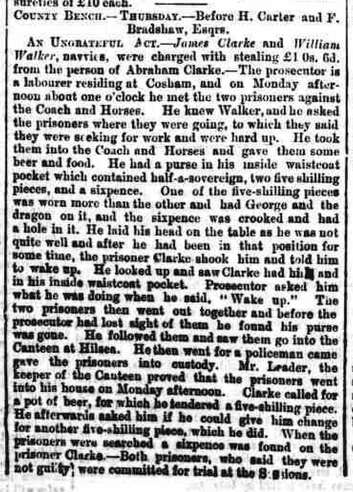
Saturday 21 September, 1867Hampshire Telegraph
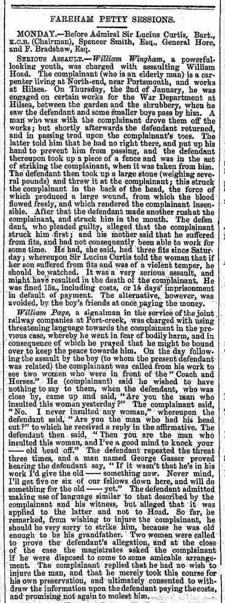
Wednesday 15 January, 1868Hampshire Telegraph
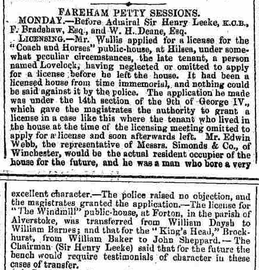
Wednesday 20 October, 1869Portsmouth Times and Naval Gazette
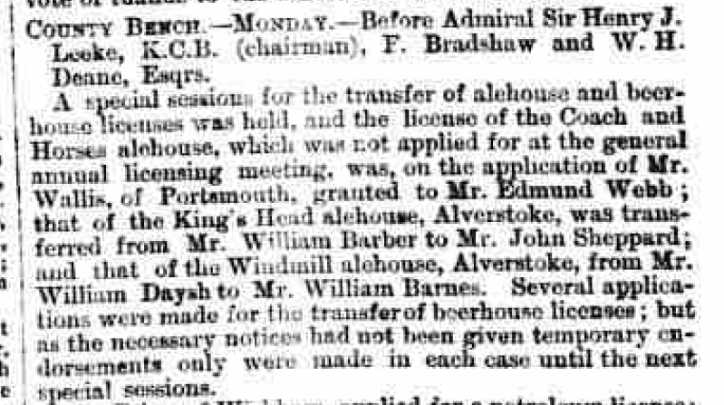
Saturday 23 October, 1869Hampshire Telegraph
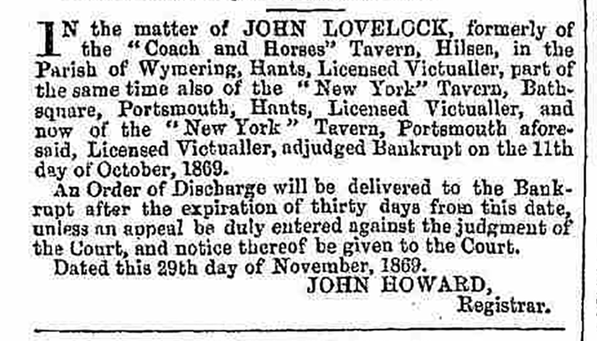
Saturday 04 December, 1869Hampshire Telegraph
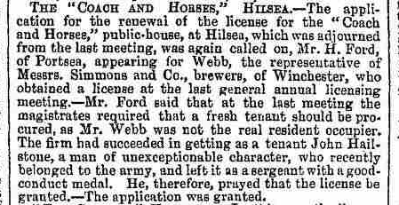
Wednesday 07 September, 1870Portsmouth Times and Naval Gazette
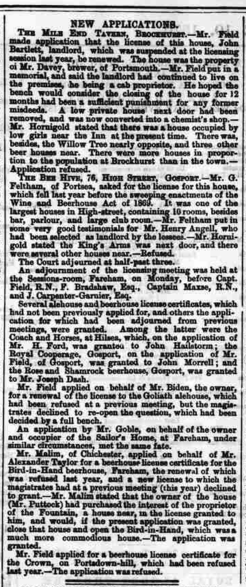
Saturday 10 September, 1870Hampshire Advertiser

Portsmouth Times and Naval Gazette
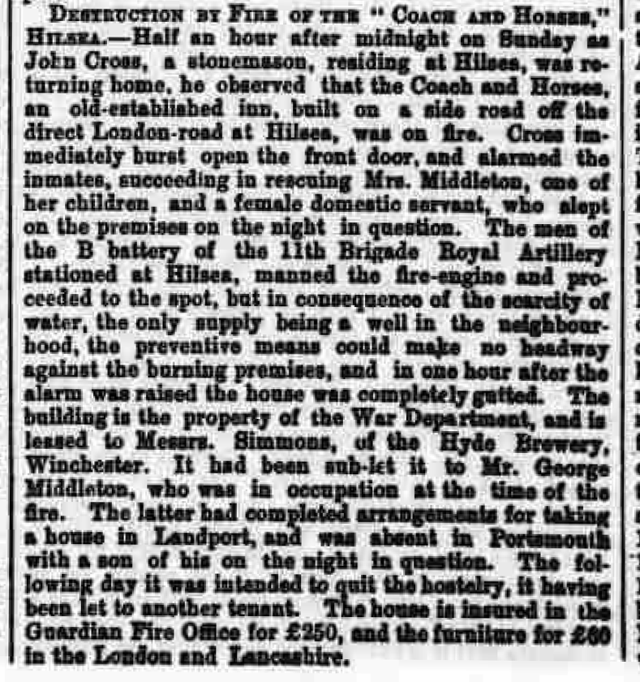
Saturday 08 October, 1870Hampshire Chronicle
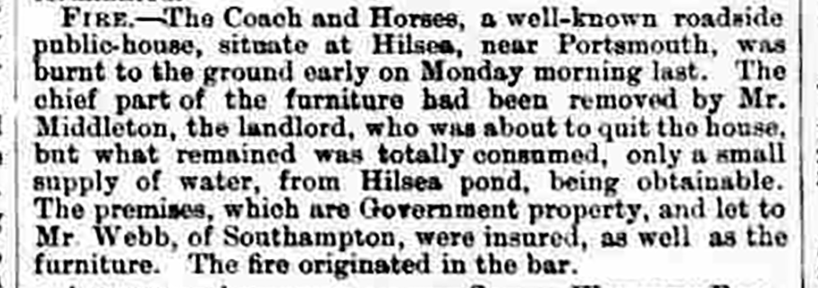
Saturday 08 October, 1870Hampshire Advertiser
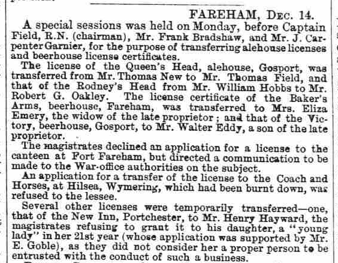
Wednesday 14 December, 1870Portsmouth Times and Naval Gazette
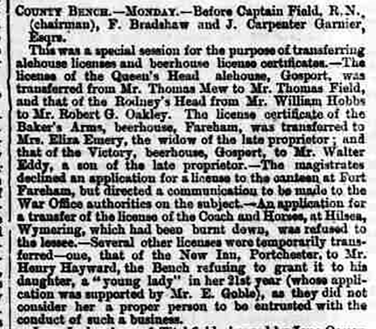
Saturday 17 December, 1870Hampshire Advertiser
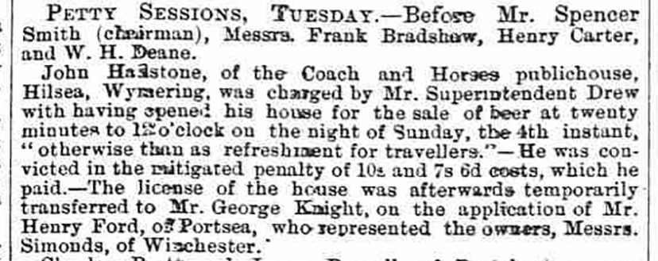
Saturday 24 December, 1870Portsmouth Times and Naval Gazette
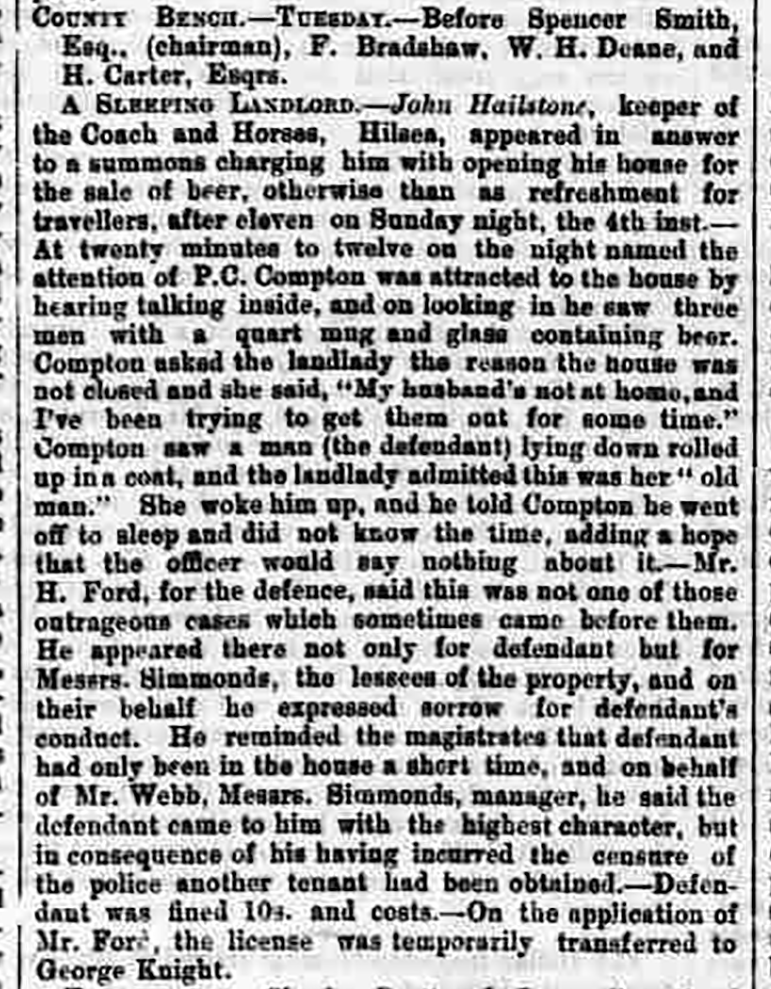
Saturday 24 December, 1870Hampshire Advertiser
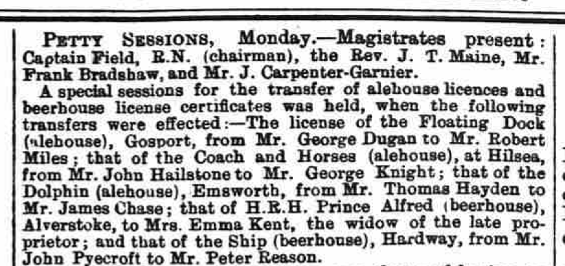
Wednesday 08 February, 1871Hampshire Telegraph
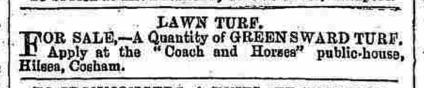
Saturday 20 May, 1871Hampshire Advertiser
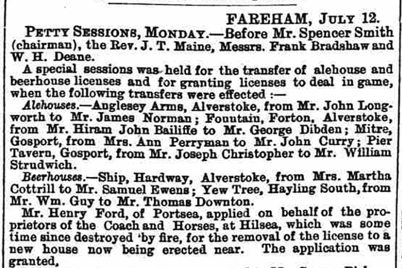
Wednesday 12 July, 1871Portsmouth Times and Naval Gazette
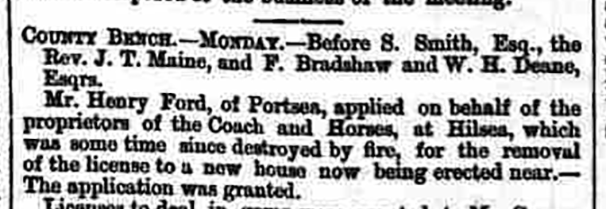
Saturday 15 July, 1871Portsmouth Times and Naval Gazette
Saturday 05 August, 1871
[...] The body of Eliza Varndell was washed up on the beach at Hilsea an hour or so after the accident occured, and was removed to the Coach and Horses public-house. [...]
Hampshire Telegraph
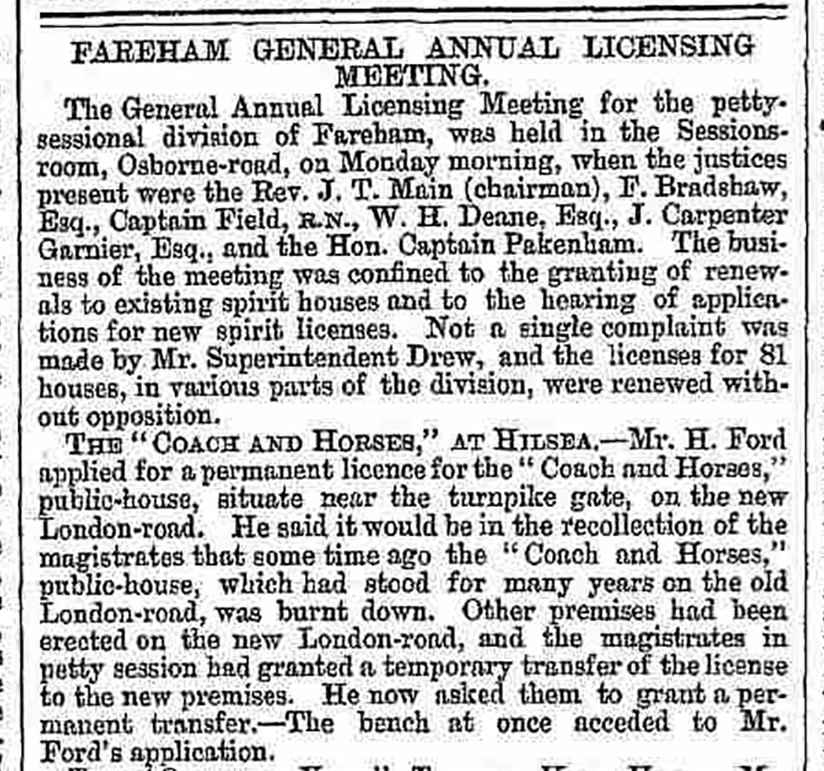
Wednesday 23 August, 1871Hampshire Telegraph
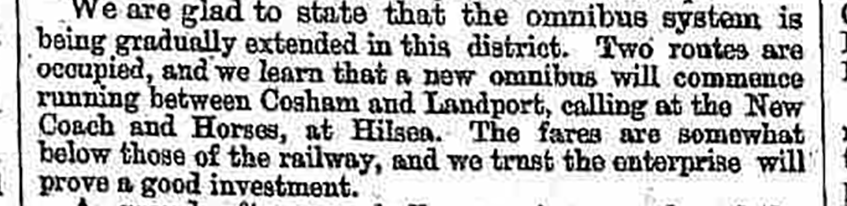
Saturday 23 September, 1871Hampshire Telegraph

Portsmouth Times and Naval Gazette
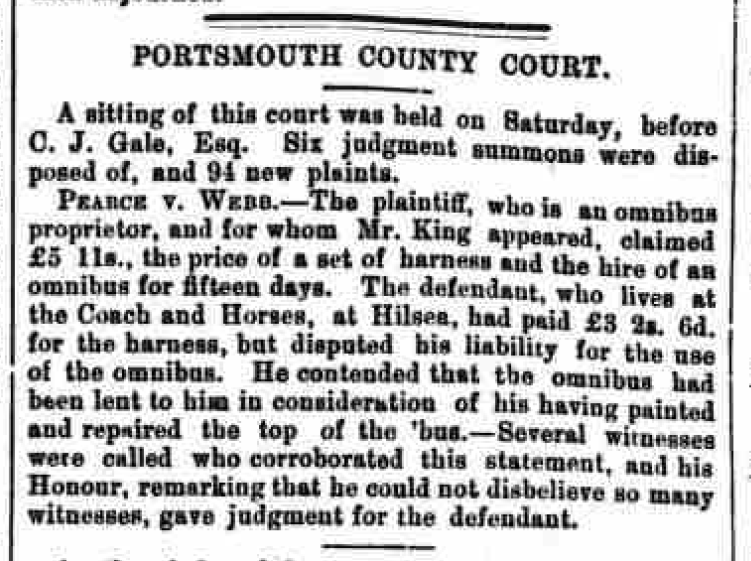
Saturday 02 December, 1871Hampshire Advertiser

Hampshire Telegraph
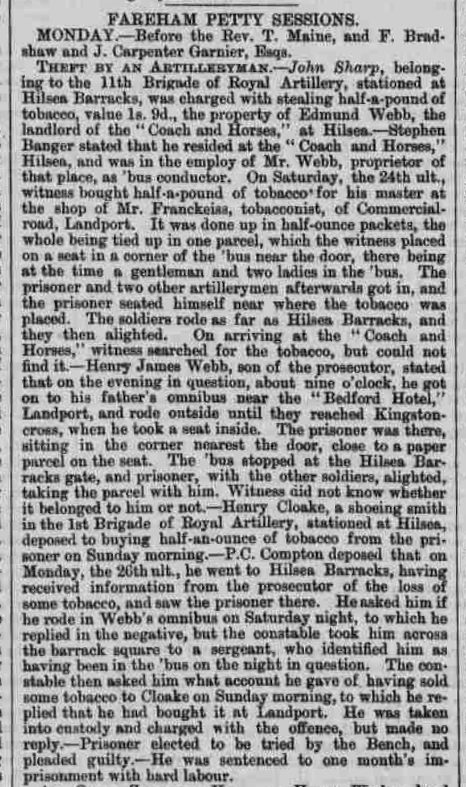
Wednesday 06 March, 1872Hampshire Advertiser
Wednesday 03 April, 1872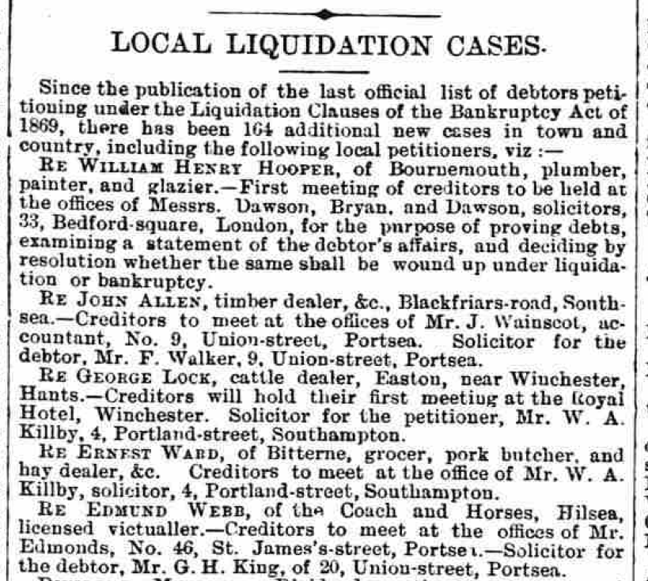
LOCAL LIQUIDATION CASES
Since the publication of the last official list of debtors petitioning under the Liquidation Clauses of the Bankruptcy Act of 1869, there has been 164 additional new cases in town and country, including the following local petitioners, viz:—
[...]
RE EDMUND WEBB, of the Coach and Horses, Hilsea, licensed victualler.—Creditors to meet at the offices of Mr. Edmonds, No. 46, St. James's-street, Portsea.—Solicitor for the debtor, Mr.. G. H. King, of 20 Union-street, Portsea.
[...]
Hampshire Telegraph
Wednesday 08 May, 1872FAREHAM PETTY SESSIONS.
TUESDAY (yesterday).—Before the Rev. J. T. Maine and Rear-Admiral H.Chads.
TEMPORARY TRANSFER.—Josiah Webb, of the "New Coach and Horses," public-house, at Hilsea, applied for a temporary transfer of the licence of that house to Thomas Nicholson, son of the proprietor of the "White Horse" public-house, West-street, Fareham.— The magistrates granted the application.
Hampshire Advertiser
Wednesday 29 May, 1872Hampshire Advertiser
Wednesday 19 February, 1873Hampshire Telegraph
Saturday 31 January, 1874Hampshire Telegraph
Wednesday 13 May, 1874Hampshire Telegraph
Saturday 15 April, 1876Hampshire Telegraph
Wednesday 11 July, 1877Hampshire Advertiser
Wednesday 05 June, 1878Portsmouth Evening News
Monday 02 September, 1878FOUND DROWNED.[...]—The body of a man was found yesterday morning in the Portsbridge Canal near the bridge. It was conveyed to the Coach and Horses, where an inquest will be held.
Hampshire Telegraph
Saturday 21 September, 1878Hampshire Advertiser
Wednesday 22 January, 1879Portsmouth Evening News
Monday 20 October, 1879Portsmouth Evening News

Hampshire Telegraph

Hampshire Telegraph
Wednesday 16 June, 1880Hampshire Telegraph
Saturday 19 February, 18811881 Census
Sunday 03 April, 1881| Name | Relation | Condition | Age | Occupation | Where born |
|---|---|---|---|---|---|
| Charles Henry Newton | Head | Married | 33 | Licensed Victualler | Southsea |
| Francis Eliza Newton | Wife | Married | 38 | — | Gosport |
| Arthur James Martin | Step Son | — | 12 | — | Southsea |
| Ernest William Martin | Step Son | — | 9 | — | Southsea |
| Sydney Herbert Martin | Step Son | — | 5 | — | Hilsea |
| Edith Adah Martin | Step Daughter | — | 3 | — | Hilsea |
| Nellie Newton | Daughter | — | 1 | — | Hilsea |
| Elizabeth Jane Griffin | Servant | — | 16 | Dom Servant | Buckland Portsmouth |
Portsmouth Evening News
Tuesday 31 May, 1881FAREHAM.
Agent for this paper, Mr. E. OVER, Portland-street.
PETTY SESSIONS.
Yesterday.—Before Admiral Chads, Sir F. Sykes, Bart., and F. Bretherton, Esq.
AFFILIATION SUMMONS—James Rappe, a driver on the Portsmouth Tramways, of 64, Emanuel-street, Landport, was summoned to show cause why an order should not be made on him for the support of the illegitimate child of Eliza Collins, of the Coach and Horses, Hilsea, of which she alleged him to be the father.—Mr. Wainscot appeared in support of the complainant, and Mr. Feltham for defendant.—After a lengthy hearing, in which the evidence was of a most contradictory nature, the Bench dismissed the summons for want of corroborative evidence.
Comment
The Fareham Petty Session Court Register for 1881 (40M70/XP4), stored at the Hampshire Record Office, Winchester, contains less information than this newspaper report.
I expected Eliza Collins to be a lodger, but the 1881 census suggests that the building is not operating as a lodging house at this time. I don't really know where she came from, or went to. I have a potential Eliza Collins visiting her sister and brother-in-law on the April 1881 census, but no mention of the child.
The Evening News
Tuesday 16 October, 1883FAREHAM.
PETTY SESSIONS.
Yesterday. — Before E. J. Sartoris, Esq. (in the chair), F. Bradshaw, Esq., and Sir Frederick Sykes, Bart.
REFUSING TO QUIT.— Charles H. Newton and Eleanor Newton, man and wife, were summoned for being drunk and refusing to quit the Coach and Horses, Hilsea, when requested to do so by the landlord, Mr. Jones, on the 2nd inst.— They were fined 15s. each, including costs.
Comment
It seemed likely that the Charles H. Newton here was the Charles Henry Newton who was previously landlord, but his wife's name, on both the 1881 and 1891 censuses, was Francis E[liza] Newton. Nellie (his daughter) could be short for Eleanor... could his wife have used Eleanor as a variation on Eliza?
Portsmouth Evening News
Monday 29 October, 1883Girl (respectable) wanted, about 18, as General Servant.—Apply Coach and Horses, Hilsea.
Portsmouth Evening News
Saturday 15 August 1885
£5 REWARD.—Any person giving information that will lead to the conviction of person or persons returning from one of the outing parties on Saturday last, about 11.20, and pulling up at my house—the Coach and Horses, Hilsea—and breaking the windows, after my retiring to rest, shall receive the above reward.—Signed, Frank Jones, Coach and Horses Inn, Hilsea, Cosham.
Portsmouth Evening News
Tuesday 08 September 1885GENERAL Servant (respectable) about 18 or 19.— Apply Coach and Horses, Hilsea.
Portsmouth Evening News
Thursday 17 December 1885HOUSE — 366, Commercial-road — to Let. — Apply F. Jones, Coach and Horses, Hilsea.
Hampshire Advertiser
Saturday 02 January, 1886REFUSING TO QUIT.—Thomas Stubbs, of Cosham, was charged by the police with having been drunk in the Coach and Horses Inn at Hilsea, and refused to quit when requested, on the 21st ult. — The defendant pleaded guilty, and was convicted in the penalty of 20s, including costs; or fourteen days imprisonment, with hard labour, in default.
Portsmouth Evening News
Monday 08 February, 1886Hampshire Advertiser
Saturday 31 July, 1886Portsmouth Evening News
Monday 02 August, 1886Hampshire Telegraph
Saturday 07 August, 1886Hampshire Telegraph
Saturday 28 January 1888
Hampshire Telegraph
Saturday 01 September, 1888Hampshire Telegraph
Saturday 07 December, 18891891 Census
Sunday 05 April, 1891| Name | Relation | Condition | Age | Occupation | Where born |
|---|---|---|---|---|---|
| Frank Jones | Head | Widow | 71 | Licensed Victualler | Marston Magna, Somerset |
| Harriett Cleall | Daughter | Married | 37 | Housekeeper (Dom) | Marston Magna, Somerset |
| Edith H Cleall | Grand daughter | Single | 14 | Scholar | Portsmouth, Hants |
| Caleb Williams | Lodger | Married | 49 | Bootmaker | Timberscombe, Somerset |
| Amelia Williams | Lodger | Married | 48 | Stocking[?] Nurse | Marston Magna, Somerset |
Comment
Note: The ad for a General Hand in 1883 Implies Caleb Williams has been living at the pub since at least then.
Portsmouth Evening News
Saturday 13 January, 1900SMOKING CONCERT AT HILSEA.—A very enjoyable smoking concert was held on Wednesday evening at the "Coach and Horses," Hilsea, by the non-commissioned officers of the batteries stationed at Hilsea, to bid farewell to comrades under orders for South Africa. The departing warriors were heartily toasted, and a capital programme was successfully carried out.
1901 Census
Sunday 31 March, 1901| Name | Relation | Condition | Age | Occupation | Where born |
|---|---|---|---|---|---|
| Edward L Hind | Head | Married | 33 | Licensed Victualler | Blyth Rotherham, Yorkshire |
| Jessie L Hind | Wife | Married | 26 | — | Portsmouth, Hants |
| Thomas Hunter | Nephew | Single | 13 | Coal Merchant's Clerk | Portsmouth, Hants |
| Mirian E Feast | Servant | Single | 23 | Cook (Domestic) | Fonthley, Hants |
| Everest Chandler | Boarder | Single | 22 | ??? | Manchester |
| John Stroud | Boarder | Single | 50 | ??? | N. York, USA |
| Earnest Porter | Boarder | Single | 21 | Foreman ??? | Huling, Warrington |
| Charlie Hollis | Servant | Single | 20 | Cellar Man | Darfield, Yorkshire |
| George Kirchen | Boarder | Single | 38 | — | ??? |
Portsmouth Evening News
Saturday 27 April, 1901WANTED a Young Man to make himself generally useful. Live indoors; must be good character.— Apply "Coach and Horses," Hilsea.
Portsmouth Evening News
Friday 03 May, 1901
Good Stabling (now up to date), to Let, all modern fittings; would suit gentleman for polo ponies, or private horses.—Apply "Coach and Horses," Hilsea.
Portsmouth Evening News
Wednesday 04 September, 1901Comment
Note: A W White is the father of Gladys White.
Portsmouth Evening News
Tuesday 17 September, 1901
Portsmouth Evening News
Tuesday 18 March, 1902HIND—On the 15th inst., at the "Coach and Horses," Edward Hunter Hind, the dearly-loved baby of Edward and Jessie Hind, agred three months and 14 days.
Hampshire Telegraph
Saturday 26 April, 1902Portsmouth Evening News
Thursday 06 November, 1902LOST—Between Cosham and the Coach and Horses, a Lady's silver-mounted Driving Whip.—Apply White, The Poplars, North End.
Comment
Note: there's a good chance that the lady who lost her whip was Gladys White, who Gladys Avenue is named for.
Portsmouth Evening News
Friday 20 February, 1903For Sale, medium-size Box Mangle, cheap.—E. Bye, back Coach and Horses, Hilsea, after 8 p.m.
Portsmouth Evening News
Wednesday 20 May, 1903Portsmouth Evening News
Thursday 11 June, 1903Portsmouth Evening News
Saturday 12 November, 1904
BANKRUPTCY NOTICES.
(From Friday Night's "London Gazette.")
Receiving orders.—Portsmouth.—William Frederick Curtis, Longleat, Dunbar-road, Eastney, decorator; Edward Lupton Hind, the "Coach and Horses," Hilsea, licensed victualler; Charles Smith, 40, Spring-street, house agent.
Portsmouth Evening News
Monday 21 November, 1904CREDITORS' MEETINGS.
CURIOUS CASE OF THE "COACH AND HORSES."
THE LEASE OF A FREE HOUSE.
The first meeting of the creditors of Edward Hind, licensed victualler, of the "Coach and Horses," Hilsea, was held at the Official Receiver's office, Portsmouth, this afternoon.
The liabilities amounted to £310 17s. 9d., and the assets totalled £27 14s. 5d., leaving a deficiency of £283 3s. 4d. The failure was attributed to insufficient turn-over in business and increased assessments.
The Official Receiver's statement showd that the debtor was originally a commercial traveller in tea, but gave up this calling in favour of an off-license business. Having saved £120, in 1897 he took over the "Coach and Horses," Hilsea, from the War Department, the lease, by consent of the War Department, being held by the United Brewery Company, who found the purchase money. The rates had increased from £42 to £152 while he was tenant of the house, and he had lost about £120 in the business.
The chief debtors were:—Portsmouth United Breweries' Company, £176 15s. 8d.; Mr. B. Murtough, £25 6s. 1d.; Mr. Miller, tobacconist, £16 16s. 1d.; Meyhew and Arnold, £14 2s. 6d.; and Mr. Rose, £10 16s. 9½d.
The Official Receiver said that the United Breweries Company paid £1,400 for the lease, and with the consent of the War Office took the lease on mortgage. It was a remarkable fact in this case that the house was supposed to be a free one. Yet in the lease the brewers were allowed to become mortgagees, and the brewers, he pointed out, were always ready to tie a house. A quesiton was whether the lease was void, because it contained a bankruptcy clause.
Mr. Franckeiss (who appeared for the Brewery Company) said he had looked through the lease, and there was no bankruptcy clause.
The Official Receiver pointed out that that removed a difficulty from the case. He went on to suggest that the house should either be advertised or handed over to the United Breweries' Co.
Mr. Murtough thought the latter course would be the best, and it was ultimately agreed to.
Comment
I believe Mr. B. Murtough to be Bernard Murtough, mineral water manufacturer, who would have been ~67 at the time of the creditors' meeting. I have a photograph of the Coach and Horses (not yet published here) showing an advertisment for Webb & Salmon mineral water on the side of the building a few years previously.
Portsmouth Evening News
Thursday 01 December, 1904DEATHS.
HIND—On the 28th ult., Edward Lupton Hind, of the "Coach and Horses," the beloved husband of Jessie Hind.
Comment
The death is just one week after the creditors' meeting.
Hampshire Telegraph
Saturday 03 December, 1904HIND—On the 28th ult., Edward Lupton Hind, of the "Coach and Horses," the beloved husband of Jessie Hind.
Portsmouth Evening News
Wednesday 28 December, 1904[...] the "Coach and Horses," Hilsea, from Edward Lupton Hind (deceased), to William Frederick James Hunt, trustee in bankruptcy of the estate of the deceased; [...]
Hampshire Chronicle
Saturday 04 February, 1905HODGE.—On the 22nd Jan., at the Coach and Horses, Hilsea, John Archer, son of John and Emily Hodge, aged 15 years and 3 months.
Portsmouth Evening News
Tuesday 08 August, 1905The London Gazette
Friday 24 November, 1905NOTICES OF RELEASE OF TRUSTEES
[...]
| Debtor's Name. | Hind, Edward Lupton |
|---|---|
| Debtor's Address. | The Coach And Horses, Hilsea, Hants. |
| [D]ebtor's Description. | Licensed Victualler |
| Court. | Portsmouth |
| No. of Matter. | 41 of 1904 |
| Trustee's Name. | W. F. J. Hunt |
| Trustee's Address. | Cambridge Junction, Portsmouth |
| [T]rustee's Description. | Official Receiver |
| Date of Release. | Nov. 6, 1905 |
[...]
Portsmouth Evening News
Monday 22 January 1906HODGE—In ever-loving remembrance of John Archer (Jacky) at "Coach and Horses," Hilsea who passed away 22nd January, 1905, aged 15 years and three months. Deeply mourned by father, mother and family.
Portsmouth Evening News
Tuesday 06 March 1906Hampshire Telegraph
Saturday 10 March, 1906Portsmouth Evening News
Wednesday 25 April, 1906HIND—On the 22nd, at her mother's residence, 37, Porchester-road, Woolston, Jessie, widow of the late Edward Hind, aged 31, late of the "Coach and Horses," Hilsea.
Hampshire Telegraph
Saturday 08 June, 1907E. R.
By Command of His Majesty's Principal Secretary of State for the War Department.
THURSDAY, JULY 18th, 1907.
To Brewery Companies, Brewers, Spirit Merchants and the Trade.
HALL, PAIN AND GOLDSMITH are favoured with instructions to offer for SALE by AUCTION, with possession, at their Estate Sale Rooms, 57, Commercial-road, Portsmouth, on the above date, at 3 o'clock in the afternoon:
Lot 1.—The Well-known Fully Licensed Freehold Property.
"THE COACH AND HORSES"
PUBLIC HOUSE, HILSEA, PORTSMOUTH.
Remarkably well situated on the main London-road, at its junction with Horsea-lane, close to Hilsea Barracks, as shown on the plan attached to the particulars, being the first licensed property on entering the Borough.
The Premises, which are substantially erected, with slated roof and stucco front and slated verandah, have the following accommodation:—Excellent drained cellar, bar parlour, three- division public and private bars, club-room, china closet, coal store, sitting-room, scullery, wine cupboard under the stairs, drawing-room, five bedrooms, box-room, and w.c. Adjoining there is a Building of two floors containing store and two rooms.
The Stabling, which is modern and well-built of bricks, with slated roof, contains five stalls, paved with blue Staffordshire bricks, and coach-house. There are two outside w.c.'s and a urinal. Gas and water are laid on, and there is a nice garden well stocked with fruit trees.
This Lot has a frontage to London-road of about 165ft. and a return frontage to Horses-lane of about 175ft 3in., the whole being let to Sir Wm. Thos. Dupree, together with the land comprised in Lot 2, for the remainder of the term of 21 years, expiring on the 29th September, 1907, at the yearly rent of £125.
Lot 2.—The Block of FREEHOLD LAND adjoining Lot 1, and having a frontage to the main London Road of about 83ft., a width in the rear of about 118ft., and an extreme depth of about 90ft.
Full particulars and conditions of Sale, together with plans, may be obtained of the Auctioneers, 57, Commercial-road, Portsmouth; or of Mr. W. H. Klwell, Land Agent to the War Department, War Office, Whitehall, S.W., and Maxwell House, Arundel-street, Strand, London, W.C.
Hampshire Advertiser
Saturday 06 July, 1907Hampshire Telegraph
Saturday 20 July, 1907Portsmouth Evening News
Monday 13 January 1908HILSEA MOAT MYSTERY.
MUTINY VETERAN'S DEATH.
IMMERSION AND EXPOSURE.
[...]
Mr. John Hodge, the landlord of the "Coach and Horses" public-house, Hilsea, said that on Thursday the 9th inst., at about 6.45 p.m., the deceased came to his house, and after purchasing some whiskey, left saying that he was going to Cosham.
[...]
Portsmouth Evening News
Saturday 14 March, 1908Morning Post
Friday 20 March, 1908TO THE EDITOR OF THE MORNING POST
SIR,—I and other Members of Parliament received a circular dated March 12 and signed "W. T. Dupree," in which the following statement was made with regard to the Coach and Horses at Hilsea:
"I have had this property valued (minus the licence) by three of the principal firms of valuers in Portsmouth, with the following results: Messrs. Hall, Pain, and Goldsmith (the Government agents who sold the property), £2,500; Messrs. King and King, £1,950; and Messrs. Low and Cooper, £2,000; giving an average of £2,150as the value of the whole of the land with the bricks and mortar. In the common division of brewery holdings—one-third Ordinary Shares, one-third Preference Shares, and one-third Debenture Stock—the investment work work out as follows: £3,333 6s. 8d. Ordinary Shares, £3,333 6s. 8d. Preference Shares, and £3,333 6s. 8d. Debenture Stock. With a time limit as proposed in the Government Bill the whole of the Ordinary Shares would disappear, the whole of the Preference Shares would disappear, and, accepting the mean valuation of the figure quoted, £1,183 6s. 8d. belonging to the Mortgage Debenture Stock holders would also be lost."
It will be observed that Mr. Dupree, of the Portsmouth United Breweries (Limited) represents the value of this house as having been reduced to £2,150. I know nothing of the Coach and Horses, but the following telegram was sent on my behalf, reply paid, at one o'clock on Monday to the Portsmouth United Breweries, Portsmouth:
"At what price would you sell the Coach and Horses and plot of land at Hilsea for? We have a client ready to offer £4,400 for prompt acceptance."
No reply has been received to this telegram and my offer has, therefore, not received "prompt acceptance," although it amounted to more than double the sum to which the value was said to have been reduced. This makes an interesting warning as to trade figures during such a campaign.
I many mention that what emboldened me to make this offer was my experience during the agitation of the trade which culminated in the Act of 1904. The cases of individual hardship which were at that time put forward with the greatest authority where the two which were cited by Sir Ralph Littler in an appeal which reached all Members of Parliament, and the two which were put forward by the leader of the trade deputation which waited upon Mr. Balfour. After an investigation into these cases, in which I was assisted by the Church of England Temperance Society, I offered to give £100 to any charity connected with the trade if either those cited by Sir Ralph Littler or those of the trade deputation were decided to be approximately correct by and judge of the High Court, after hearing at statement on each side.—Yours, &c.,
A. CAMERON CORBETT.
Hampshire Telegraph
Saturday 21 March 1908Greenock Telegraph and Clyde Shipping Gazette
Monday 23 March, 1908Hampshire Chronicle
Saturday 28 March, 1908Portsmouth Evening News
Friday 10 April, 1908"PINK'S PICTORIAL"
"What do you think of Pink's Pictorial?" asks the Editor of the new illustrated monthly magazine. We reply that it is a very creditable performance and a welcome addition to the local literature. It invades no one's field, and yet covers much ground of interest to the antiquarian, the historian, and the general student of men and things. In this number the first of a series of illustrated articles upon "Celebrated neighbours" is devoted to Mr. W. L. Wyllie, R.A., there is a description of Cosham Fair, Government House, Portsmouth is pictured and described, the now more than ever famous "Coach and Horses" is shown, and the story of its sale retold, and a right of way greivance at Hayling Island is pictorially represented. For frontispiece there is an excellent portrait of the new Commander-in-Chief.
Shepton Mallet Journal
Friday 17 April, 1908Portsmouth Evening News
Tuesday 16 June, 1908WANTED, a Situation as a Barmaid; good references, country preferred.—Direct Coach and Horses, Hilsea, Cosham, Hants. Telephone, 8 Cosham
Portsmouth Evening News
Wednesday 11 November 1908ALTERATIONS OF PUBLIC HOUSES
[...]
With respect to the "Coach and Horses," Hilsea, owners the Portsmouth United Breweries, Mr. Cogswell said there was a large room adjacent to the bar, and it was proposed to throw it into the bar and form, in accordance with the practice of this firm, one large bar with nests of seats.
Mr. Grigsby: You do not propose to do anything to destroy its historis interest?—(A laugh.)—Mr. Cogswell: No, sir. We also ask to extend the verandah round the whole extent of the house.
All four plans were passed.
Portsmouth Evening News
Saturday 21 November, 1908Hampshire has played a somewhat prominent part in the matter of the Licensing Bill. In the early history of that measure the "Coach and Horses" at Hilsea won fame, and is so proud of its noteriety that a celebrated cartoon has been adopted as the sign of the house. [...]
Hampshire Telegraph
Saturday 19 February, 1910Hampshire Telegraph
Friday 09 February, 1912Portsmouth Evening News
Friday 27 December, 1912Hampshire Telegraph
Friday 07 March, 1913Portsmouth Evening News
Monday 01 June, 1914MOTOR MISHAP AT HILSEA.
Milton Lady taken to Hospital.
There was a motor car accident a little distance from the "Coach and Horses," on the road to Cosham, this afternoon, as the result of which two ladies were thrown out, and one was rather badly cut about the face.
Mrs. Kathleen Symons and Miss Kathleen Masters, of 5, Milton-road, Portsmouth, the former 61 years of age, were being driven towards Cosham, when it is understood something went wrong with the steering gear, for the car ran into the bank by the side of the road, also coming in contact with a tramcar standard.
The police motor ambulance was summoned, and conveyed the two ladies to the Royal Portsmouth Hospital. The elder (Mrs. Symons) as stated, sustained a serious cut on the side of her face, and was also suffering from shock. She was detained. Her companion was fortunately not hurt beyond being considerably shaken.
Portsmouth Evening News
Saturday 08 May, 1915FOR SALE, Contractor's Plant, three brick carts, three sets cart horse harness, 50 navvy barrows, useful scaffoding, etc.—Apply at once, Contractor's Yard, Hilsea, next to Coach and Horses.
Portsmouth Evening News
Saturday 22 May, 1915WANTED at once. Potman.—Apply Coach and Horses London-road, Hilsea.
Portsmouth Evening News
Wednesday 20 December, 1916TWO Irish Terrier Dog Pups, 9 weeks, well bred, 10s 6d.—Coach and Horses, Hilsea.